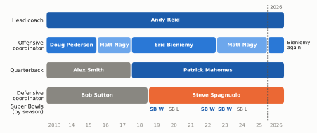
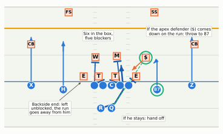
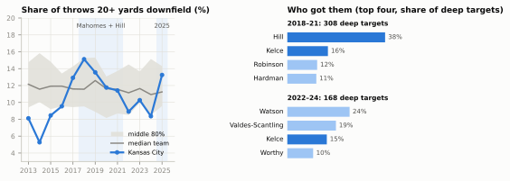
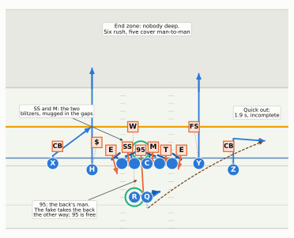
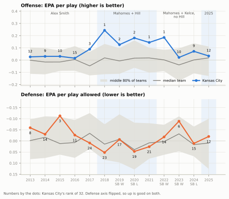

Show the Python (shared helpers and data for this chapter)
import osimport loggingimport numpy as npimport pandas as pdimport matplotlib.pyplot as pltfrom matplotlib.patches import FancyArrowPatch, FancyBboxPatchfrom matplotlib.lines import Line2Dfrom gridiron import Play, Player, show_animation, style, draw_marker, routes as rfrom gridiron.data import pbp, nfllogging.getLogger("matplotlib.font_manager").setLevel(logging.ERROR)style.apply()PDF = os.environ.get("RTG_FORMAT", "").lower() in ("pdf", "typst", "print")# ---------------------------------------------------------------- building players by handdef O(key, pos, d, w, label=None):"""An offensive player at (d, w): d yards downfield of the line, w yards to the offense's right."""return Player(key, pos, "off", d, w, label=label if label isnotNoneelse key)def D(key, pos, d, w, label=None):return Player(key, pos, "def", d, w, label=label)def oline(d=-0.7):"""Five offensive linemen, 1.6 yards apart; only the center is labelled."""return [O(k, k, d, w, "C"if k =="C"else"") for k, w in (("LT", -3.2), ("LG", -1.6), ("C", 0.0), ("RG", 1.6), ("RT", 3.2))]# ---------------------------------------------------------------- drawing helpers (gridiron has none of these)def no_numbers(ax):"""Remove the painted yard-line numbers (they sit where receivers and corners stand), and clip player labels to the drawn window (gridiron clips the markers but not their letters)."""for t inlist(ax.texts):if t.get_alpha() ==0.55: t.remove()continue t.set_clip_on(True)if t.get_zorder() ==10and t.get_fontweight() =="bold": # a player's letters or number t.set_fontsize(max(t.get_fontsize(), 6.0))def say(fld, play, d, w, text, fs=7.2, color=None, ha="center", box=True, weight="normal"):"""A short on-field label at (d, w), on a light box so field lines don't cut through it.""" x, y = fld.xy(*play.to_abs(d, w)) kw =dict(bbox=dict(boxstyle="round,pad=0.22", fc=style.SURFACE, ec=style.BASELINE, lw=0.5)) if box else {} fld.ax.text(float(x), float(y), text, ha=ha, va="center", fontsize=fs, color=color or style.INK, zorder=12, fontweight=weight, linespacing=1.05, **kw)def pointer(fld, play, text, text_at, to, fs=7.0, ha="center"):"""A labelled arrow from a text box to a spot on the field (both in (d, w) yards).""" tx, ty = fld.xy(*play.to_abs(*text_at)) px, py = fld.xy(*play.to_abs(*to)) fld.ax.annotate(text, xy=(float(px), float(py)), xytext=(float(tx), float(ty)), ha=ha, va="center", fontsize=fs, color=style.INK, zorder=12, linespacing=1.05, arrowprops=dict(arrowstyle="-|>", color=style.INK_2, lw=0.8, shrinkB=6), bbox=dict(boxstyle="round,pad=0.22", fc=style.SURFACE, ec=style.BASELINE, lw=0.5))def snapshot(play, t, ax, window, lateral, notes=(), trails=True, ahead=()):"""Everyone where he is at time t, with faint trails of where he has been and the ball's flight so far: one panel of a printed frame strip. (gridiron's frame_strip uses one window for every panel; a 45-yard pass needs the camera to follow the ball.) `ahead` dots the rest of a player's path.""" pos = {k: play.position(k, t) for k in play.players} moved = [pl.moved(d=float(pos[k][0]), w=float(pos[k][1])) for k, pl in play.players.items()] q = Play([m for m in moved if m.side =="off"], [m for m in moved if m.side =="def"], los=play.los, ball_y=play.ball_y, to_go=play.to_go) q.highlights =dict(play.highlights) fld = q.draw(ax=ax, lateral=lateral, window=window, title=False) ax = fld.ax no_numbers(ax) P =lambda d, w: fld.xy(*play.to_abs(d, w)) # noqa: E731 _, t_start, t_end = play._compile()if trails:for k, pl in play.players.items():if pl.side =="off"and pl.pos in ("LT", "LG", "C", "RG", "RT"):continue pts = np.array([play.position(k, tt) for tt in np.linspace(min(t_start, 0.0), t, 40)])if np.ptp(pts[:, 0]) + np.ptp(pts[:, 1]) <0.3:continue xs, ys = P(pts[:, 0], pts[:, 1]) ax.plot(xs, ys, color=style.OFFENSE if pl.side =="off"else style.DEFENSE, lw=1.1, alpha=0.5, zorder=3, ls="-"if pl.side =="off"else (0, (3, 2)))for k in ahead:if t < t_end -0.05: pts = np.array([play.position(k, tt) for tt in np.linspace(t, t_end, 40)]) xs, ys = P(pts[:, 0], pts[:, 1]) ax.plot(xs, ys, color=style.OFFENSE_DARK, lw=1.0, ls=(0, (1, 1.6)), zorder=3) bdw = play.ball_position(t)for kind, _, t_rel in play.ball_events:if kind =="pass"and t > t_rel: # a thrown ball: draw its flight so far (sx, sy), (ex, ey) = P(*play.ball_position(t_rel)), P(*bdw) ax.add_patch(FancyArrowPatch((float(sx), float(sy)), (float(ex), float(ey)), arrowstyle="-|>", mutation_scale=8, color=style.BALL, lw=1.4, ls=(0, (2, 1.5)), zorder=9))if t >0andmin(np.hypot(*(np.asarray(pos[k]) - bdw)) for k in play.players) <0.9: bdw = bdw + np.array([0.0, 1.05]) # a carried ball: draw it at the carrier's hip, not over his label bx, by = P(*bdw) draw_marker(ax, float(bx), float(by), "ball", "", fld.pts_per_yard())for txt in ax.texts: txt.set_clip_on(True)for n in notes: say(fld, play, *n)return flddef strip_legend(fig, y=0.0, offense="Offense (Chiefs)"): h = [Line2D([], [], marker="o", ls="", markerfacecolor=style.OFFENSE, markeredgecolor="white", ms=8, label=offense), Line2D([], [], marker="D", ls="", markerfacecolor=style.DEFENSE_TINT, markeredgecolor=style.DEFENSE, ms=7, label="Defense"), Line2D([], [], color=style.OFFENSE, lw=1.1, alpha=0.6, label="Path so far (offense)"), Line2D([], [], color=style.DEFENSE, lw=1.1, alpha=0.6, ls=(0, (3, 2)), label="Path so far (defense)"), Line2D([], [], color=style.BALL, lw=1.4, ls=(0, (2, 1.5)), label="Pass")] fig.legend(handles=h, loc="upper center", bbox_to_anchor=(0.5, y), ncol=3, fontsize=7.5, frameon=False)# ---------------------------------------------------------------- data used by the charts (nflverse, cached)N = nfl()_cols = ["game_id", "play_id", "season", "season_type", "posteam", "defteam", "play_type", "epa", "success","down", "ydstogo", "yardline_100", "shotgun", "qb_dropback", "pass_attempt", "sack", "qb_spike","air_yards", "passer", "receiver_player_name"]PBP = pbp(list(range(2013, 2026)), columns=_cols)PLAYS = PBP[(PBP.season_type =="REG") & PBP.play_type.isin(["pass", "run"]) & PBP.epa.notna() & PBP.down.notna()]ATT = PLAYS[(PLAYS.pass_attempt ==1) & (PLAYS.sack ==0) & (PLAYS.qb_spike !=1) & PLAYS.air_yards.notna()]PART = pd.concat([N.load_participation([y]).to_pandas()[["nflverse_game_id", "play_id", "time_to_throw","defense_coverage_type", "number_of_pass_rushers"]] for y inrange(2018, 2026)])PART["play_id"] = PART.play_id.astype(float)FTN = N.load_ftn_charting(list(range(2022, 2026))).to_pandas()
Super Bowl LIV, February 2, 2020, in Miami Gardens. Kansas City trails San Francisco 20–10 with 7:13 left, and it is third-and-15 at the Chiefs’ own 35. The 49ers have the best pass rush in the building and a coverage that keeps everything in front of it. A completion short of 15 yards is worth nothing, and an incompletion means a punt with seven minutes left and the game slipping away. On the sideline Patrick Mahomes asks his coaches whether there is time to run a play called “Wasp.” There is. He takes the snap, retreats, keeps retreating, and from 14 yards behind the line, with a 49ers defensive tackle arriving, throws the ball 57 yards through the air to Tyreek Hill near the left sideline. Forty-four yards. Kansas City scores three touchdowns in the last seven minutes and wins its first Super Bowl in fifty years.1 Why did Andy Reid’s offense have a play built for third-and-15? Why would a quarterback ask for the slowest-developing route on the call sheet, with the league’s best rush coming? And how did a 61-year-old coach who learned his NFL football in Green Bay in the early 1990s end up running the most modern offense in the sport? This chapter is about the team that answered those questions better than anyone for seven years, and about what happened when opponents found answers of their own.
You’ll be able to…
Explain how Andy Reid built the Chiefs’ offense from three sources: West Coast bones, college spread and RPO ideas, and a playbook full of plays invented for one opponent, and spot each on a broadcast (a screen or quick throw, an RPO, a formation you have never seen from them before).
Explain, with numbers, why a quarterback who stays dangerous after four seconds changes the defense’s arithmetic, and what defenses do about it.
Contrast the Tyreek Hill era (2018–2021) with the Travis Kelce quick-game era (2022–2024), and read the option route against man and against zone.
Explain Steve Spagnuolo’s pressure defense as the complement to the offense, and recognise the pre-snap picture that says his Cover 0 is possible (and why you can never be sure).
Name the offensive coordinators by season and the five Super Bowls (won LIV, LVII and LVIII; lost LV and LIX), with what decided each.
Explain how opponents answered (two-high shells, three-man rushes, four-man pressure with no blitz) and what survives of the Chiefs’ approach after the 6–11 season of 2025.
NoteYou’ll need
This is a Level 4 case study, so it leans on a lot of earlier chapters. One line each:
The modern era (The Modern Era): after 2017 the league’s offenses went to motion, condensed sets and play-action, and defenses answered by playing more two-high coverage (two deep safeties) to take away big plays. The Chiefs are one of that chapter’s main characters; here they get the full treatment.
Systems and play calls (Offensive Systems and Play-Calling Languages): the West Coast offense (WCO) is Bill Walsh’s family of short, timed, horizontal throws and long, descriptive play calls; the Air Raid is the college pass offense that taught a generation of quarterbacks, Mahomes included.
RPOs and the quick game (Run-Pass Options, The Quick Game): an RPO is a run play with a pass attached, decided by the quarterback’s read of one defender; the quick game is throws released in about two seconds or less.
Routes (Passing Fundamentals): an option route lets the receiver choose his break from what the coverage does; air yards are how far past the line a pass travels in the air; a chip is a back or tight end hitting a pass rusher before releasing into his route (Pass Protection).
Off-script football (Quarterback Play): an off-script play is one that leaves its design, usually because the quarterback leaves the pocket; the scramble drill is the set of rules receivers follow when he does.
Coverage (Man Coverage, Cover 3): in man coverage each defender has a receiver; Cover 1 is man with one deep safety; in Cover 3 three defenders each take a deep third and four play zones underneath. Leverage is which side of a receiver a defender stands on.
The numbers (Expected Points and Success Rate): EPA (expected points added) is how much a play changed the offense’s expected score; average NFL plays sit close to zero, and a team that averages +0.15 a play over a season is elite.
Reading the diagrams: offense is blue circles, defense outlined orange squares. Where a real play is drawn, Chiefs players wear their jersey numbers (15 Mahomes, 10 Hill, 87 Kelce); otherwise the offense uses letters (Q quarterback, R running back, X, Z and H receivers, Y tight end) and the defense uses E and T for linemen, M and W for linebackers, $ for the nickel back, CB for cornerbacks and FS and SS for safeties. A green ring marks the player to watch. The blue line is the line of scrimmage, the orange line the line to gain, and the faint lines across the field are 5 yards apart.
The problem: a West Coast coach in a league that was changing
Andy Reid was born in Los Angeles in 1958, played offensive tackle at Brigham Young under LaVell Edwards (whose teams threw the ball when almost nobody in college did), and coached offensive linemen at four colleges from 1983 to 1991 before Mike Holmgren hired him in Green Bay in 1992. Holmgren was one of Bill Walsh’s assistants from the 49ers, so Reid learned the West Coast offense from its second generation: tight ends coach and assistant line coach first, then quarterbacks coach for Brett Favre in 1997 and 1998. In January 1999 the Philadelphia Eagles made him, at 40, the second-youngest head coach in the league. He stayed fourteen seasons, won 130 regular-season games, reached five NFC Championship Games (four in a row from 2001 to 2004) and lost Super Bowl XXXIX to New England, 24–21. After a 4–12 season the Eagles let him go on the last day of 2012. Four days later Kansas City hired him.2
The team he took over had gone 2–14. The first five Kansas City seasons were the kind most coaches would frame: 11–5, 9–7, 11–5, 12–4 and 10–6, with Alex Smith, a quarterback acquired from San Francisco, playing efficient, careful football. They also carried a ceiling you can see in the playoff results. A 45–44 loss at Indianapolis in January 2014, after leading by 28 in the third quarter. A 27–20 loss at New England two years later. An 18–16 home loss to Pittsburgh. A 22–21 home loss to Tennessee in January 2018, after leading 21–3 at halftime.3 From 2013 to 2016 the Chiefs’ offense ranked between 9th and 15th in the league in EPA per play: good, never frightening. (The 2017 offense, 3rd, is the exception, and the next two sections explain it; the chart in the data-fingerprint section shows the whole run.)
That ceiling had a schematic shape. The classic West Coast offense is a machine for completing passes: three- and five-step drops, routes timed to the quarterback’s last step, throws spread across the width of the field so that a 6-yard completion works like a run. It needs a quarterback who throws on time and accurately, and Smith did. What it doesn’t do by itself is produce explosive plays, and by the middle 2010s NFL defenses had grown very good at the thing a timing offense needs least: keeping everything in front of them and tackling the catch. A team that has to drive 75 yards in twelve completed passes gives a defense twelve chances to win a down. Reid’s problem in Kansas City was how to keep the efficiency and add the explosions, without blowing up the system his staff and players already knew.
Show the Python
ROWS = [ ("Head coach", [(2013, 2027, "Andy Reid", style.OFFENSE_DARK)]), ("Offensive\ncoordinator", [(2013, 2016, "Doug Pederson", style.OFFENSE), (2016, 2018, "Matt Nagy", style.SEQUENTIAL_BLUE[2]), (2018, 2023, "Eric Bieniemy", style.OFFENSE), (2023, 2026, "Matt Nagy", style.SEQUENTIAL_BLUE[2]), (2026, 2027, "", style.OFFENSE)]), ("Quarterback", [(2013, 2018, "Alex Smith", style.MUTED), (2018, 2027, "Patrick Mahomes", style.OFFENSE_DARK)]), ("Defensive\ncoordinator", [(2013, 2019, "Bob Sutton", style.MUTED), (2019, 2027, "Steve Spagnuolo", style.DEFENSE)]),]SB = {2019: "W", 2020: "L", 2022: "W", 2023: "W", 2024: "L"}fig, ax = plt.subplots(figsize=(6.5, 2.75))for i, (row, spans) inenumerate(ROWS): y =len(ROWS) - i ax.text(2012.85, y, row, ha="right", va="center", fontsize=7.6, color=style.INK, linespacing=1.0)for a, b, lab, col in spans: ax.add_patch(FancyBboxPatch((a +0.04, y -0.32), b - a -0.08, 0.64, boxstyle="round,pad=0,rounding_size=0.12", fc=col, ec="none")) ax.text((a + b) /2, y, lab, ha="center", va="center", fontsize=7.2, color="white", fontweight="bold")ax.text(2027.15, len(ROWS) -1, "Bieniemy\nagain", ha="left", va="center", fontsize=7.0, color=style.INK, linespacing=1.0)for yr, res in SB.items(): ax.text(yr +0.5, 0.45, f"SB {res}", ha="center", va="center", fontsize=6.8, color=style.OFFENSE_DARK if res =="W"else style.INK_2, fontweight="bold"if res =="W"else"normal")ax.text(2012.85, 0.45, "Super Bowls\n(by season)", ha="right", va="center", fontsize=7.6, color=style.INK, linespacing=1.0)ax.set_xlim(2010.6, 2028.6)ax.set_ylim(0.0, len(ROWS) +0.6)ax.set_xticks([y +0.5for y inrange(2013, 2027)])ax.set_xticklabels([str(y) if y in (2013, 2026) elsef"{y %100:02d}"for y inrange(2013, 2027)], fontsize=7)ax.tick_params(length=0)ax.grid(False)for sp in ("left", "bottom"): ax.spines[sp].set_visible(False)ax.set_yticks([])ax.axvline(2026, color=style.INK_2, lw=0.8, ls=(0, (3, 2)))ax.text(2026.5, len(ROWS) +0.45, "2026", ha="center", fontsize=6.8, color=style.INK_2)fig.tight_layout()plt.show()

Figure 62.1: The Reid years in Kansas City at a glance. Reid has been head coach since 2013; he calls the plays himself (except for a stretch of 2017 when he handed them to Matt Nagy), and his offensive coordinator relays and helps build them. Coordinators: Doug Pederson (2013–2015), Matt Nagy (co-coordinator with Brad Childress in 2016, sole coordinator in 2017), Eric Bieniemy (2018–2022), Nagy again (2023–2025) and, from 2026, Bieniemy again. Defense: Bob Sutton (2013–2018), Steve Spagnuolo (2019 to now). The Mahomes years produced five Super Bowl trips in six seasons (W = won, L = lost).
A word on who does what, because it confuses almost everyone. Reid is the play-caller: he chooses the play and says a short name for it into his headset. The offensive coordinator finds it on his own copy of the sheet and relays the full call to the quarterback (The Game Plan describes the two-step relay and Reid’s famous oversized play card). The coordinator also builds the weekly plan, coaches the quarterbacks and runs meetings, which is why Reid’s coordinators keep leaving for head-coaching jobs: Doug Pederson won a Super Bowl as Philadelphia’s head coach two seasons after leaving, and Matt Nagy became the Bears’ head coach after 2017. The one exception to Reid calling plays came in late 2017, when a slump of six losses in seven games led him to hand the calls to Nagy for the rest of the season.
So what changes when the coordinator changes? Not the voice on the headset. The coordinator shapes which plays reach Reid’s card each week, how the quarterbacks are taught to read them and how the meetings run, and nobody outside the building can isolate that effect in the data. That is why this chapter names the coordinators by season (the figure above) but explains the offense through Reid, Mahomes and the players around them.
The scheme answer, part 1: keep the West Coast bones
Reid didn’t throw the old offense away. Watch a Chiefs game from any season and you will still see its skeleton:
Horizontal stretches. Routes that spread defenders sideways, so a linebacker can’t cover both a flat route and a short in-cut. The quick game (The Quick Game) is pure West Coast, and so are the running back’s checkdowns.
The tight end and the back as receivers. Walsh’s offenses threw to everybody. Reid’s have always fed a tight end (Brent Celek and the young Zach Ertz in Philadelphia, Travis Kelce in Kansas City) and a receiving back.
Long, descriptive calls. “2-3 Jet Chip Wasp” is a West Coast sentence: “2-3 Jet” most likely names the protection (the Chiefs have never said), “Chip” tells the back to hit a rusher before he releases, and “Wasp” is one receiver’s route. The language is the family resemblance, even when the plays look nothing like Walsh’s (Offensive Systems shows the call broken into its parts).
A big menu, installed weekly. Reid draws new plays on index cards early in the week, and his opening script is built from them (The Game Plan tells the story). That habit comes from Walsh too, who scripted his openers and treated the playbook as something rebuilt for each opponent (Case Study: Walsh’s 49ers).
ImportantWhy it exists
The West Coast core is what makes the rest possible. A team that can complete a 6-yard pass on any down doesn’t fall behind schedule, and a team that stays on schedule can afford to call its odd, risky, creative plays when it chooses, not when it is desperate. The bones are the insurance policy. What they give up is speed to the end zone: a pure timing offense needs many plays to score, and every play is another chance for a sack, a penalty or a turnover.
The scheme answer, part 2: graft the college game onto it
The second source arrived on purpose. When Reid came to Kansas City in 2013 he brought Brad Childress, his old Philadelphia coordinator and former Vikings head coach, and gave him a title the NFL had never seen: spread game analyst. Childress’s job for three seasons was to study the college spread offenses of the time (the zone read, the packaged plays that would soon be called RPOs, the empty and trips formations) and work out what would survive in the NFL. In 2016 Childress and quarterbacks coach Matt Nagy became co-coordinators; in 2017 Nagy had the job alone, and the Chiefs built a large part of their offense on run-pass options, years before most of the league did.4
You know the RPO from Run-Pass Options: the linemen block a run, and the quarterback, holding the ball against the running back’s belly at the mesh point (the instant of the possible handoff; not the crossing-route concept also called “mesh”), watches one defender who can’t do two jobs. If that defender comes down to stop the run, the quarterback pulls the ball and throws into the space he just left. If he stays out to cover the pass, the back gets the ball against a box the offense has blocked.
Why read anyone at all? Because of the box count (A First Look at Defense). Five linemen can block five men. Even against two deep safeties, the defense keeps six in the box, and inside zone handles the sixth the way Zone Running taught: it leaves the backside end unblocked, because the run is going away from him and he can only chase it from behind. That leaves one more defender who can get to the ball: the apex player on the play side, who stands between the box and the receivers. He is the seventh man, the one the offense has no blocker for, so the quarterback reads him instead.
Show the Python
def rpo_play(): off = oline() + [ O("QB", "QB", -5.0, 0.0, "Q"), O("RB", "RB", -5.0, -2.0, "R"), O("X", "WR", -0.7, -15.0, "X"), O("H", "WR", -1.5, -9.0, "H"), O("KELCE", "TE", -1.5, 8.5, "87"), O("Z", "WR", -0.7, 15.0, "Z"), ] dfn = [ D("LDE", "DE", 1.0, -5.2), D("LDT", "DT", 1.0, -2.4), D("RDT", "DT", 1.0, 0.7), D("RDE", "DE", 1.0, 4.6), D("MIKE", "MIKE", 4.8, 1.0), D("WILL", "WILL", 4.6, -3.0), D("APEX", "NB", 4.5, 6.4), D("LCB", "CB", 7.0, -15.0, "CB"), D("RCB", "CB", 7.0, 15.5, "CB"), D("FS", "FS", 13.0, -8.0), D("SS", "SS", 13.0, 8.0), ] p = Play(off, dfn, los=40, to_go=10)# inside zone to the right: five linemen block five of the six in the box; the backside end is left alone p.block("LT", "WILL"); p.block("LG", "LDT"); p.block("C", "RDT"); p.block("RG", "MIKE"); p.block("RT", "RDE") p.run("RB", [(-4.1, 0.6), (-1.5, 2.2), (3.0, 1.8)], absolute=True) p.read("APEX") p.route("KELCE", [(0, 0), (5.5, 0.0), (5.0, -0.6)]) p.route("Z", r.go(9)); p.route("H", r.go(9)); p.route("X", r.go(9)) p.path("APEX", [(2.2, 3.9)], absolute=True, speed=3.0) p.highlight("APEX", "KELCE")return prpo = rpo_play()fld = rpo.draw(window=(-8.5, 14.0), lateral=(-19.5, 19.5), width_in=6.5, title=False)no_numbers(fld.ax)say(fld, rpo, 9.4, 12.6, "If the apex defender ($) comes\ndown on the run: throw to 87", 6.8)say(fld, rpo, -6.9, 6.0, "If he stays: hand off", 6.8)say(fld, rpo, 8.6, -2.5, "Six in the box,\nfive blockers", 6.8)pointer(fld, rpo, "Backside end: left\nunblocked, the run\ngoes away from him", (-5.0, -11.5), (0.3, -5.2), fs=6.6)plt.show()

Figure 62.2: The college graft in one picture: an inside-zone RPO of the kind Kansas City ran more than any other team in 2025 (illustrative). Two deep safeties leave six defenders in the box (E, T, T, E, M, W) against five linemen. Inside zone to the right blocks five of them and leaves the backside end (E, far left) alone, because the run is going away from him. The seventh defender who could reach the run is the nickel ($), standing in the apex between the right tackle and the tight end (87): the offense has no blocker for him, so the quarterback reads him instead (dashed green line). If he comes down to fill the run (orange arrow), the quarterback pulls the ball and throws to 87, whose 5-yard hitch settles in the space the nickel just left. If he stays, it is a handoff with every play-side defender blocked.
Why would a West Coast coach want this? Because the RPO solves the same problem the West Coast offense was invented to solve, more cheaply. Walsh’s short passes were a way to get the ball to a skill player in space without asking the line to win a long pass-protection rep. An RPO does that and makes the defense wrong on every snap: a run against a light box or a pass against a defender who has just stepped toward the line. Alex Smith, who had played in Urban Meyer’s spread-option offense at Utah, was well suited to it. The 2017 Chiefs led the league in passer rating behind him, rookie Kareem Hunt won the rushing title, and the offense jumped from 15th in EPA per play to 3rd.
NoteFilm room: Chiefs 2017 — the opener at New England
The game. Thursday night, September 7, 2017, the NFL’s season opener, at Foxborough against the defending champions. Kansas City won 42–27. Alex Smith threw for 368 yards and four touchdowns, including a 75-yard bomb to Tyreek Hill, and Kareem Hunt, a third-round rookie who had fumbled on his first NFL carry, finished with 148 rushing yards, 98 receiving yards and three touchdowns.5
What to notice: how often the “run” and the “pass” are the same play. Watch Smith at the mesh: his eyes are not on the back but on a linebacker or a slot defender, and the Patriots’ defenders are a half-step late all night because each of them is responsible for two things. Then watch Hill. A receiver that fast changes what a safety can do on every snap, a theme that becomes the whole first era of the Mahomes years.
The third piece came in the 2017 draft. Kansas City traded up from 27th to 10th, giving Buffalo its first-round pick, a third-rounder and its 2018 first, to take Patrick Mahomes from Texas Tech.6 Mahomes had played three seasons for Kliff Kingsbury in an Air Raid offense: shotgun, four and five receivers, reads of the whole field, throws from every arm angle. He sat behind Smith for a year. When he took over in 2018, Reid didn’t make him a West Coast quarterback. He met him halfway. The Chiefs played from the shotgun on 81% of their snaps that season, against a league average of 64%, and stayed around 80% for the next seven years: about as far from the under-center Shanahan offenses of the same era as a West Coast descendant could get (Case Study: The Shanahan Tree).
The scheme answer, part 3: the menu, and the plays nobody else has
The third source is Reid himself. On the first-quarter drive of Super Bowl LIV that put Kansas City ahead, facing fourth-and-1 at the San Francisco 5, the Chiefs lined up with three players stacked behind Mahomes; Mahomes turned a full circle, the others spun and reset, and running back Damien Williams took a direct snap and ran for 4 yards and a first down. Reid had found the play on old film of the 1948 Rose Bowl, Michigan against USC, and the Chiefs had been practicing it since spring.7 Three years later, two fourth-quarter touchdowns in Super Bowl LVII came on a return-motion play called “Corn Dog”: a receiver motions in toward the ball, his man-to-man defender follows him, and at the snap the receiver turns and runs back out toward the sideline, leaving the defender stopped, turning around and a stride behind. A year after that, the winning touchdown of Super Bowl LVIII came on a relative of it built for a defense that had studied Corn Dog; its first option was a shovel pass, another piece of the menu8 (Motion and Shifts draws the return motion, and What Beats What tells both stories).
How do you spot a play built for one opponent on a broadcast? You can’t be certain from the couch, but the tells are consistent: a formation or motion you haven’t seen from Kansas City all season (three players stacked behind the quarterback, a receiver reversing his motion), usually on fourth down, in the red zone or in a big game, where a coach spends a play he has been saving.
CautionCommon misconception
“The Chiefs win with trick plays.” They win with an ordinary core and use the strange plays as seasoning. In FTN’s charting, a trick play (reverses, flea-flickers, throwback passes and the like) was 1.5% of Kansas City’s plays in 2022, fourth in the league, but 0.5% in 2023 (26th), 0.9% in 2024 (9th) and 0.1% in 2025 (30th).9 What the Chiefs did far more than almost anyone was throw screens: between 6% and 10% of their plays from 2022 to 2025, never lower than seventh in the league. Screens are the West Coast’s way of punishing a pass rush, and they are the trick plays that work every week. The famous plays are memorable because they are rare; the screens are invisible because they are constant.
What the big menu buys is subtler than surprise. A defense prepares for an opponent by studying its tendencies: from this formation, with this motion, they run this. Reid’s offense shows the same handful of concepts from so many formations, shifts and motions that the tendency table gets thin. The illusion of complexity (Constraint Theory and Sequencing) usually describes a small playbook dressed up to look big. Reid runs a genuinely big one, and his players carry it because the core underneath doesn’t change.
Patrick Mahomes and the defensive arithmetic
Every pass defense is built on a clock. A four-man rush reaches an NFL quarterback, on average, in something under three seconds; the coverage has to hold for that long, and then the rush finishes the play. Defensive coordinators design coverages around that budget: zone defenders drop to spots they can hold for two and a half or three seconds, man defenders play technique they can sustain for that long. When the clock runs out, the quarterback has to throw it away, take a sack or improvise, and for almost everyone improvising is a losing bet.
Here is that bet in numbers. Coverages are built for about three seconds; to count only throws that are clearly past that budget, the numbers below use four seconds as the cutoff. From 2018 to 2025, NFL passes thrown in under four seconds averaged about +0.17 EPA per attempt. Passes thrown after four seconds or more averaged about −0.03: a bad play, on average, before you even count the sacks the long-held ball produces. Now look at one quarterback.
Figure 62.3: Throwing late. Every quarterback with at least 150 pass attempts released four or more seconds after the snap, 2018–2025 regular seasons (dots sized by those late throws). Horizontal: EPA per attempt on throws released in under four seconds; vertical: on throws released after four seconds or more. The grey lines are the league averages. What to look at: for nearly every quarterback the late throws are worth much less than the quick ones; Mahomes (blue, top right) is the exception, and he threw more late passes than anyone on the chart. Jameis Winston’s late throws rate higher on a much smaller, mostly 2018–2019 sample. Sacks are not included (the charting doesn’t time them; see the text). Data: nflverse play-by-play and NGS time to throw (2018–2022) and FTN (2023–2025) via nflreadpy.
Patrick Mahomes’s throws after four seconds, all 674 of them from 2018 to 2025, were worth about +0.30 EPA each: slightly more than his on-time throws (+0.28), and about a third of a point more per throw than the league’s late throws.10 He threw late about half again as often as the average quarterback.
A sceptic should ask about sacks, because a quarterback who holds the ball also gets sacked holding it, and the charting behind the chart doesn’t record a time for sacks, so they can’t be added to it. Two other measures can include them. First, Mahomes was sacked on 4.5% of his dropbacks from 2018 to 2025, against 6.4% for everyone else: the long-held ball didn’t turn into sacks the way it does for most quarterbacks. Second, FTN’s charting from 2022 records whether the quarterback left the pocket, and that count includes sacks and scrambles. Mahomes was outside the pocket on about 23% of his dropbacks through 2025 (the league, 18%), sacked on about 7% of those (the league, 8%), and those dropbacks were worth +0.31 EPA each, more than double his in-pocket plays, while the league’s out-of-pocket dropbacks were worth roughly nothing.11 Sacks included, holding the ball didn’t cost him. (A note on denominators, since this chapter uses three: EPA per attempt counts only passes thrown; per dropback adds sacks and scrambles, so it is usually a little lower; per play adds the runs too. Compare numbers only within one kind.) (Quarterback Play has the league-wide picture and the left-handed flip in Denver that Reid calls Mahomes’s best play.)
Think about what that does to a defensive coordinator’s arithmetic. Every coverage call is a bet that the rush gets home before the coverage breaks. Against most quarterbacks the bet pays twice: the quick throws are contested, and the late ones are bad. Against Mahomes, the late half of the bet doesn’t pay. So the defense has to change something, and every change costs:
Cover longer. Play coverage that holds for five seconds, not three. That usually means more defenders in coverage and fewer rushing, which gives the quarterback even more time.
Rush with discipline. Keep the rushers in rush lanes so he can’t escape outside, instead of winning with speed around the edge. That gives up the fastest route to a sack.
Spy him. Assign one defender to mirror him (spy). That defender is not covering anyone.
Get there sooner. Blitz, so the ball has to come out before four seconds. That leaves fewer defenders in coverage, and against a quarterback who sees the field, more open receivers.
None of these is free, and the Chiefs’ offense was built to collect on each one. The four-second plays aren’t luck. They come from the scramble drill: rules every receiver follows the moment the quarterback leaves the pocket, so the improvisation is organised on both ends.
Show the Python
def scramble_play(): off = oline() + [ O("QB", "QB", -5.0, 0.0, "Q"), O("RB", "RB", -5.0, -1.8, "R"), O("X", "WR", -0.7, -16.0, "X"), O("H", "WR", -1.5, -9.0, "H"), O("KELCE", "TE", -1.5, 8.0, "87"), O("Z", "WR", -0.7, 16.0, "Z"), ] dfn = [ D("LDE", "DE", 1.0, -5.0), D("LDT", "DT", 1.0, -0.8), D("RDT", "DT", 1.0, 2.4), D("RDE", "DE", 1.0, 5.6), D("MIKE", "MIKE", 5.0, 1.0), D("WILL", "WILL", 4.5, -3.5), D("LCB", "CB", 6.0, -16.0, "CB"), D("NB", "NB", 5.0, -8.4), D("SS", "SS", 6.0, 7.2), D("RCB", "CB", 6.0, 16.0, "CB"), D("FS", "FS", 14.0, 0.0), ] p = Play(off, dfn, los=40, to_go=7)for k in ("LT", "LG", "C", "RG", "RT"): p.block(k, pts=[(-1.4, 0.0)], speed=1.0)# the play as called: a dropback against man coverage p.dropback(2.0) p.route("X", [(0, 0), (16.0, 0.0), (22.0, 0.8)]) p.route("X", [(25.0, -7.0)], absolute=True, speed=3.0) # deep: keep climbing, drift toward the QB p.route("H", [(0, 0), (11.0, 0.0), (12.0, -6.0)]) # a dig... p.route("H", [(15.0, 4.5)], absolute=True, speed=4.0) # ...that keeps crossing toward the scramble p.route("KELCE", [(0, 0), (9.0, -1.0), (8.5, -2.0)], speed=6.5) # settle inside his man p.route("KELCE", [(10.5, 16.0)], absolute=True, speed=5.0, delay=1.5) # scramble: work to the QB's sideline p.route("Z", [(0, 0), (12.0, 0.0), (10.8, -0.8)]) # a curl... p.route("Z", [(24.0, 17.5)], absolute=True, speed=6.5, delay=1.2) # ...that turns up the sideline p.route("RB", [(0, 0), (-1.0, 2.5), (1.5, 6.0)], side=-1, speed=5.0)# the pocket breaks: the left end beats the tackle, the QB slides, then breaks out to his right p.rush("LDE", pts=[(-5.5, 2.5), (-8.2, 4.8)], speed=2.9) p.path("LDE", [(-7.6, 7.2)], absolute=True, speed=4.0) p.rush("LDT", pts=[(-1.6, 0.0)], speed=1.2) p.rush("RDT", pts=[(-1.6, 0.0)], speed=1.2) p.rush("RDE", pts=[(-3.8, -1.2)], speed=1.6) p.path("RDE", [(-5.8, 8.6)], absolute=True, speed=3.5, delay=0.6) p.path("QB", [(-7.5, 2.5)], absolute=True, speed=4.3, delay=1.9) p.path("QB", [(-6.8, 11.0)], absolute=True, speed=6.0) p.pass_to("KELCE", t=4.45)# man coverage, with a hole player (the Mike) who comes up when the QB leaves the pocket p.man("LCB", "X"); p.man("NB", "H"); p.man("RCB", "Z"); p.man("WILL", "RB") p.path("SS", [(8.4, 4.6)], absolute=True, speed=4.0) # inside leverage: sits on the in-break p.path("SS", [(9.4, 12.6)], absolute=True, speed=4.4, delay=3.0) # late to turn and chase p.drop("MIKE", (8.0, 2.0), speed=3.0) p.path("MIKE", [(0.8, 8.0)], absolute=True, speed=5.0, delay=1.9) # ...and comes up for the QB p.drop("FS", (17.0, 1.5), speed=2.0) p.path("FS", [(19.0, 7.0)], absolute=True, speed=2.0, delay=1.0) p.highlight("QB", "KELCE")return pscr = scramble_play()SCR_T = [2.2, 3.3, 4.45, 5.45]if PDF: NOTES = {0: [(19.0, -11.0, "Everyone covered", 6.8)],1: [(-8.6, -10.0, "The pocket breaks:\nout to the right", 6.6)],2: [(16.0, 12.5, "Z turns his curl\nup the sideline", 6.4)], } POINTERS = {2: [("87 slides to\nthe QB's side", (3.0, 15.5), None)],3: [("His man (SS) sat inside;\n87 breaks out a step clear", (12.6, 4.5), None), ("M comes up for the QB:\nthe middle opens for H", (-7.6, -9.5), "MIKE")], } labels = ["+2.2 s · the play as called", "+3.3 s · the escape", "+4.45 s · the scramble drill","+5.45 s · the catch"] fig, axes = plt.subplots(2, 2, figsize=(6.5, 6.9))for i, (ax, t) inenumerate(zip(axes.flat, SCR_T)): f_ = snapshot(scr, t, ax, (-10.0, 28.0), (-20.0, 20.5), notes=NOTES.get(i, ()))for txt, at, who in POINTERS.get(i, ()): pointer(f_, scr, txt, at, tuple(scr.position(who or"KELCE", t)), fs=6.2) ax.set_title(labels[i], fontsize=8.5, loc="left", color=style.INK) fig.tight_layout(h_pad=0.4, w_pad=0.3) strip_legend(fig, y=0.01, offense="Offense") plt.show()else: show_animation(scr, times=SCR_T)
Figure 62.4: The scramble drill (an illustrative play, not a specific one): four rushers and man coverage (Cover 1), with the free safety deep and the Mike linebacker (M) sitting in the hole underneath. At 2.2 seconds every receiver is covered and the ball should be gone or thrown away. Instead the left end (E) beats the tackle, the quarterback slides away from him and breaks out to his right. The receivers follow the drill’s rules: the deep receivers keep climbing (X drifts toward the quarterback’s side), the intermediate receivers work back toward the sideline he is running to (Z turns his curl up the sideline; the tight end, 87, slides out along with him), and the crossing route (H) keeps crossing. The defenders, playing man with their backs to the quarterback, have to turn and chase. The strong safety (SS), 87’s man, had been sitting on the inside of him to take away the in-cut; when 87 breaks back outside toward the scramble, the safety has to turn and run, and the throw beats him to the sideline with 87 a step clear. Meanwhile the Mike has to choose between his zone and the quarterback; he comes up, which opens the middle for H as well.
ImportantWhy it exists
The scramble drill turns a broken play into a second play with its own rules, and the second play favours the offense. Man defenders run with their backs to the ball, so when their receivers change direction they lose a step turning to find them. Zone defenders have dropped to spots chosen for a throw that was supposed to come at two and a half seconds, and the spots are now wrong. The cost is on the offense’s side too: receivers have to learn the rules and trust that the quarterback follows them, and a quarterback who extends plays will take sacks and make some awful throws. For most passers the trade is a loss. For a few it is a weapon, and Kansas City built around one.
Signature play: Jet Chip Wasp
Now the hook makes sense. You have heard this call before, in Offensive Systems; this is its home, and here is the whole play. Third-and-15 is the down where defenses are most comfortable: they can rush four, drop seven, and keep everything in front of them, because 14 yards of gain is still a win for them. San Francisco did exactly that: nickel personnel (four linemen, two linebackers and five defensive backs), four rushers, and Cover 3 behind them.12 Here is the play, as reconstructed from the charting and the published accounts.
Show the Python
def wasp_play(): off = oline() + [ O("QB", "QB", -5.0, 0.0, "15"), O("RB", "RB", -5.0, 2.8, "26"), O("KELCE", "TE", -0.7, -5.0, "87"), O("BELL", "TE", -0.7, 5.0, "81"), O("HILL", "WR", -1.5, -9.5, "10"), O("WATKINS", "WR", -1.5, -16.0, "14"), ] dfn = [ D("LDE", "DE", 1.0, -6.2), D("LDT", "DT", 1.0, -2.4), D("BUCK", "DT", 1.0, 2.4, "99"), D("RDE", "DE", 1.0, 6.2), D("MIKE", "MIKE", 4.8, -1.2), D("WILL", "WILL", 4.8, 3.0), D("NB", "NB", 5.5, -10.0), D("SS", "SS", 8.0, -5.5), D("LCB", "CB", 7.0, -16.0, "CB"), D("RCB", "CB", 7.5, 12.0, "CB"), D("FS", "FS", 13.0, -1.0, "20"), ] p = Play(off, dfn, los=45, to_go=15)# protection: five linemen and Bell set; Williams (26) chips the right end, then leaks to the flatfor k in ("LT", "LG", "C", "RG", "RT"): p.block(k, pts=[(-2.0, 0.0)], speed=1.0) p.block("BELL", pts=[(-1.2, 0.0)], speed=1.0) p.block("RB", pts=[(2.0, 5.6)], speed=5.0) p.route("RB", [(0, 0), (1.2, 2.5), (2.5, 4.0)], side=1, delay=0.2, speed=4.5)# routes: Hill's "Wasp" (a deep crosser's stem to the middle, then a break to the sideline)# and two illustrative companions p.route("HILL", [(13.0, -6.5), (19.5, -1.0), (44.5, -17.6)], absolute=True, speed=7.55) p.route("WATKINS", [(0, 0), (17.0, 0.0), (15.2, 2.2)]) p.route("KELCE", [(0, 0), (13.0, -0.8), (14.0, -10.0)])# Mahomes: a deep drop, then a drift to about 14 yards behind the line p.dropback(5.0) p.path("QB", [(-14.0, 0.4)], absolute=True, speed=1.65) p.pass_to("HILL", t=3.78)# four-man rush, all engaged for two seconds; then Buckner beats the guard and hits Mahomes as he throws p.rush("LDE", pts=[(-2.2, 0.6)], speed=1.2); p.rush("LDT", pts=[(-2.2, 0.2)], speed=1.2) p.rush("RDE", pts=[(-2.6, 1.2)], speed=1.4) p.rush("BUCK", pts=[(-2.4, 0.0)], speed=1.2) p.path("BUCK", [(-12.5, 2.1)], absolute=True, speed=7.6, delay=0.3)# Cover 3: three deep, four under p.path("LCB", [(14.0, -15.6), (16.4, -17.2)], absolute=True, speed=4.2) p.path("LCB", [(31.0, -18.4)], absolute=True, speed=5.6, delay=1.3) p.path("FS", [(24.0, 1.0)], absolute=True, speed=3.8) # Ward takes the crosser... p.path("FS", [(43.4, -15.4)], absolute=True, speed=7.0, delay=0.45) # ...and chases from inside p.drop("RCB", (17.0, 13.0), speed=4.5) p.drop("NB", (8.5, -12.5), speed=3.5) p.path("NB", [(12.5, -15.0)], absolute=True, speed=3.0) p.drop("SS", (8.5, -3.6), speed=3.5) p.drop("MIKE", (9.0, -0.5), speed=3.5) p.drop("WILL", (7.0, 7.5), speed=3.5) p.highlight("HILL", "BUCK")return pwasp = wasp_play()WASP_T = [0.0, 1.8, 3.78, 7.05]if PDF: LAT = (-22.5, 15.5) WIN = [(-15.5, 23.0), (-15.5, 23.0), (-16.5, 31.0), (4.0, 49.5)] NOTES = {0: [(-9.6, 4.6, "Williams chips\nthe right end", 6.6), (17.5, 6.0, "3rd-and-15", 7.0, None, "center", True, "bold")],1: [(20.0, -15.5, "Hill stems toward\nthe middle...", 6.6)],2: [(-9.0, 7.6, "99 gets home\nas he throws", 6.6), (28.5, -14.0, "...then breaks\nfor the sideline", 6.6), (21.0, 6.5, "20 took the crosser:\nnow he is inside Hill", 6.4)],3: [(36.0, 4.0, "Caught 43 yards past\nthe line: a 44-yard gain", 6.8)], } labels = ["Snap · trips left, Kelce in-line", "+1.8 s · the crosser stem","+3.8 s · the throw, 14 yards deep", "+7.0 s · the catch"] fig = plt.figure(figsize=(6.5, 7.75)) gs = fig.add_gridspec(2, 2, height_ratios=[WIN[0][1] - WIN[0][0], WIN[2][1] - WIN[2][0]], hspace=0.09, wspace=0.05, top=0.965, bottom=0.075, left=0.01, right=0.99)for i, t inenumerate(WASP_T): ax = fig.add_subplot(gs[i //2, i %2]) snapshot(wasp, t, ax, WIN[i], LAT, notes=NOTES.get(i, ()), ahead=("HILL",) if i <3else ()) ax.set_title(labels[i], fontsize=8.5, loc="left", color=style.INK) strip_legend(fig, y=0.06) plt.show()else: show_animation(wasp, times=WASP_T)
Figure 62.5: ‘2-3 Jet Chip Wasp,’ Super Bowl LIV, third-and-15 at the Kansas City 35, 7:13 left, Chiefs trailing 20–10 (the panels follow the ball, so the second row shows more of the field than the first). Charted facts: shotgun with two tight ends (Kelce, 87, and Blake Bell, 81); four 49ers rushers; Cover 3; the ball out 3.8 seconds after the snap with Mahomes under pressure, DeForest Buckner (99) hitting him as he threw; caught 43 yards downfield and tackled by Jimmie Ward (20) for a 44-yard gain. From the published accounts: Hill (10) lined up on the same side as Kelce and Sammy Watkins (14), and his route started like a deep crosser toward the middle, then broke sharply back toward the sideline (the dotted line shows where he is going). Notice the third panel: Ward, the deep-middle safety, went with the crosser and is now on the inside of Hill, the wrong side. The exact alignment, the other routes, the protection and the defenders’ paths are our illustration, chosen to match those facts, not traced from film.
Take the call one word at a time, because each word is a piece of the answer to third-and-15.
“2-3 Jet.” The Chiefs have never explained it publicly. In many West Coast playbooks a number plus “Jet” names a pass protection, and that is the likeliest reading here: it has nothing to do with the jet motion of Motion and Shifts, and nobody goes in jet motion on this play.
“Chip.” A route this long needs time, so the protection is built to buy it. With six men blocking (five linemen and the second tight end) and the back hitting the edge rusher before he releases, the 49ers’ four rushers face seven blockers’ worth of attention for the first second and a half. That is the trade: only three receivers (Hill, Watkins and Kelce) are in the pattern until the back leaks out, so if the coverage takes all three away there is nowhere else to go. Even with seven men protecting, Buckner beat his man, which tells you how close the margin is.
“Wasp.” Hill’s route starts like a deep crosser, a deep in-breaking route that keeps going across the field: he angles toward the middle at 15 to 20 yards, which is exactly where a Cover 3 defense wants a receiver to go, into the zone of the deep-middle safety and under the eyes of the linebackers. (Offensive Systems pictures it as a deep dig that turns into a corner; the crosser part is the stem, the part of a route that sets the defender up before the break.) Ward, the deep-middle safety, does his job and takes the crosser. Then Hill breaks the other way, flattening toward the sideline at 20-plus yards, and the defense’s own rules work against it. Our illustration draws the left corner the way a pattern-matching Cover 3 corner is often taught to play: he has the outside receiver (here Watkins, on a deep comeback), and when that receiver stops at 15 yards the corner drives on him, trusting the deep-middle safety to own the inside receiver crossing toward the middle. Hill’s break back outside lands in the seam between those two rules: the safety is on the wrong side of him, and the corner has come up. The ball is aimed for grass behind the corner and in front of the sideline. Reid’s explanation of the name: “We call it ‘Wasp.’ Literally put the stinger on ’em.”13
The drift. Mahomes dropped and then kept retreating, to about 14 yards behind the line. That’s why the throw travelled about 57 yards in the air for a catch 43 yards downfield. Most quarterbacks can’t make that throw from that spot with a defensive tackle closing, and most offenses wouldn’t call a route that needs it. This is the previous section in one snap: the 49ers’ coverage held for three seconds, which is all a coverage is built to do, and the ball came out at almost four, when the coverage’s budget had already run out and the play wasn’t done yet.
NoteMadden vs. real life
In Madden you pick the play. On a real sideline the play-caller picks it, but a great quarterback’s opinion carries weight, and Reid’s staff lets Mahomes ask for plays he believes in. During the replay review before this snap he asked offensive coordinator Eric Bieniemy, “Do we have time to run Wasp?”, and Bieniemy relayed it on the headset: “He’s asking for Wasp.” Nobody has said exactly which “time” he meant. It wasn’t the game clock (7:13 was plenty), and his next line (“I’ll run it at any down and distance”) suggests he was asking for a chance to call it.14 The coaches had to agree before the call went in. The play existed because the staff had built it and the team had practiced it; the timing came from the player who would have to make it work.
Two more things to notice. First, Wasp is a third-and-long play, and having one is a statement. Most offenses treat third-and-15 as a down to survive: a screen, a draw, a checkdown, and punt. A West Coast team with an Air Raid quarterback treated it as a down to win. Second, the 49ers played their rules. Four-man rush, Cover 3, deep safety on the crosser, corner on the outside receiver, pressure arriving. The defense lost to a design that put a receiver between two of those rules, asked for one more second than a defense is built to give, and had a quarterback who could use it.
Era one: Tyreek Hill and the deep shot (2018–2021)
Mahomes’s first season as the starter was one of the best passing seasons in history: 5,097 yards, 50 touchdowns and the MVP award.15 Kansas City finished first in the league in EPA per play. The shape of that offense is easy to describe: a West Coast menu underneath, Travis Kelce in the middle of the field, and Tyreek Hill, perhaps the fastest receiver in the league, threatening every deep third on every snap. In 2018 the Chiefs threw 15% of their passes 20 or more yards downfield, one of the highest shares in the league, and Hill was the target on 38% of the Chiefs’ deep throws from 2018 to 2021.16
Show the Python
deep = ATT.assign(deep=ATT.air_yards >=20).groupby(["season", "posteam"]).deep.mean().unstack()kcd = ATT[(ATT.posteam =="KC") & (ATT.air_yards >=20)]e1 = kcd[kcd.season.between(2018, 2021)].receiver_player_name.value_counts()e2 = kcd[kcd.season.between(2022, 2024)].receiver_player_name.value_counts()fig, (a1, a2) = plt.subplots(1, 2, figsize=(6.5, 2.9), gridspec_kw=dict(width_ratios=[1.25, 1]))a1.fill_between(deep.index, deep.quantile(0.1, axis=1) *100, deep.quantile(0.9, axis=1) *100, color=style.GRID, alpha=0.9, lw=0, label="middle 80%")a1.plot(deep.index, deep.median(axis=1) *100, color=style.MUTED, lw=1.5, label="median team")a1.plot(deep.index, deep["KC"] *100, color=style.OFFENSE, lw=2.2, marker="o", ms=4, label="Kansas City")for a, b in ((2017.5, 2021.5), (2024.5, 2025.5)): a1.axvspan(a, b, color=style.OFFENSE_TINT, alpha=0.45, lw=0, zorder=0)a1.text(2019.5, 19.4, "Mahomes + Hill", ha="center", va="top", fontsize=6.8, color=style.INK_2)a1.text(2025.0, 19.4, "2025", ha="center", va="top", fontsize=6.8, color=style.INK_2)a1.set_ylim(3, 20)a1.set_title("Share of throws 20+ yards downfield (%)", fontsize=9, loc="left")a1.set_xticks([2013, 2015, 2017, 2019, 2021, 2023, 2025])a1.tick_params(labelsize=7.5)a1.legend(loc="lower right", fontsize=6.8)rows = []for vc in (e1, e2): rows += [(n.split(".")[-1], v / vc.sum()) for n, v in vc.head(4).items()]for y, (n, sh) inzip([7.6, 6.6, 5.6, 4.6, 2.2, 1.2, 0.2, -0.8], rows): a2.barh(y, sh *100, color=style.OFFENSE if n in ("Hill", "Kelce") else style.SEQUENTIAL_BLUE[1], height=0.72) a2.text(-1.5, y, n, ha="right", va="center", fontsize=7.2, color=style.INK) a2.text(sh *100+1.2, y, f"{sh:.0%}", ha="left", va="center", fontsize=7, color=style.INK_2)a2.text(0, 8.45, f"2018–21: {int(e1.sum())} deep targets", fontsize=7.4, color=style.INK, fontweight="bold")a2.text(0, 3.05, f"2022–24: {int(e2.sum())} deep targets", fontsize=7.4, color=style.INK, fontweight="bold")a2.set_xlim(0, 48)a2.set_ylim(-1.4, 9.0)a2.axis("off")a2.set_title("Who got them (top four, share of deep targets)", fontsize=9, loc="left")fig.tight_layout(w_pad=6.0)plt.show()

Figure 62.6: Two eras in one chart. Left: the share of Kansas City’s pass attempts thrown 20 or more yards past the line, against the league (grey band: middle 80% of teams; grey line: median team). The shaded columns mark the Mahomes-and-Hill seasons (2018–2021) and 2025. The deep share peaked in 2018 and fell as defenses adjusted; after Hill was traded in March 2022 it dropped below the league median, and it came back in 2025. Right: who got the deep targets. In the Hill era one receiver had 38% of them; in 2022–2024 they were spread across four receivers, none with more than a quarter. Regular seasons; sacks and spikes excluded. Data: nflverse play-by-play.
Defenses answered the deep ball the way you’d expect: by putting a second safety deep. You met the numbers in The Quick Game: Kansas City saw a two-high shell on about 36% of its dropbacks in 2018 and about 46% in 2021, third-most in the league, and its average throw got shorter every year. Two-high coverage is a deal: it gives up room underneath and a lighter box against the run in exchange for never being beaten over the top. Mahomes’s 2019–2021 seasons are the story of a great quarterback learning to take that deal: the checkdown to the back, the 8-yard throw to Kelce, the run against six in the box. Deep shots still came (the Chiefs’ share stayed near the league median), but now they had to be earned.
How? Not mainly with play-action, which you might expect from a West Coast descendant: the fingerprint table later in the chapter shows the Chiefs faking a handoff less often than most teams. Two other things did the safeties-moving work. The RPO already puts a real run threat in front of the second level on many snaps, so a separate fake adds less. And the deep ball came late: 28% of Kansas City’s throws of 20-plus air yards from 2018 to 2025 left Mahomes’s hand four or more seconds after the snap, against 17% for the rest of the league.17 A two-high shell is built to stop the deep throw that comes on time. Against a quarterback who can wait for the shell to break, or for a Wasp to find the seam, it holds for three seconds and then has to hold some more.
What about the run game? Kansas City threw more than most teams (its pass rate ranked between 5th and 10th highest every season from 2018 to 2025), and its designed runs were ordinary: 3rd in the league in EPA per run in 2018, then between 8th and 16th. But they came against light boxes. From 2022 to 2025, 60% of the Chiefs’ designed runs met six or fewer defenders in the box, against 51% for the league.18 That is two-high coverage’s price, paid on every handoff: a middling run game could stay on schedule against six, and the RPO punished the defender who tried to make it seven.
It worked well enough to reach four straight AFC Championship Games and two Super Bowls in that era. The first title game, after the 2018 season, was lost 37–31 in overtime to New England, the Patriots scoring on the first possession of overtime against a defense that had ranked 23rd of 32 in EPA per play allowed. Mahomes never touched the ball in overtime. Two days later Reid fired his defensive coordinator, and the other half of this story begins.
Three years later the same overtime rule ran the other way. In the divisional round on January 23, 2022, Buffalo scored to lead 36–33 with 13 seconds left. Mahomes completed passes of 19 yards to Hill and 25 to Kelce, Harrison Butker kicked a 49-yard field goal with three seconds to go, Kansas City won the overtime coin toss, and Kelce caught the winning touchdown on the first possession: 42–36. Josh Allen, like Mahomes three years earlier, never touched the ball in overtime. That game is why the league changed its playoff overtime rules that spring so that both teams get a possession (Clock and Game Management), the rule Super Bowl LVIII would be played under.19
Era two: Kelce, the option route and the quick game (2022–2024)
In March 2022 the Chiefs traded Hill to Miami for five draft picks rather than pay him a receiver’s top-of-market contract. It was a cap decision as much as a football one (Building a Roster explains why quarterback-contract teams make these trades). The offense that came after it rebuilt itself around Travis Kelce and a rotating cast of receivers, and around a shorter passing game: the share of deep throws fell to 9% in 2022, and the average throw in 2023 and 2024 was the second-shortest in the league (The Quick Game has that chart). And in 2022, the first season without Hill, Mahomes threw for 5,250 yards and 41 touchdowns, won his second MVP, and the Chiefs finished first in EPA per play again. They won the Super Bowl.
The engine of that offense was an old idea: a receiver who decides where to go after the snap. Kelce’s signature route, the option route, sends him to somewhere between 5 and 10 yards, depending on the call and the quarterback’s drop, and lets him choose. The Patriots of the Brady era had built a passing game around the same route for their slot receivers (Passing Fundamentals); Kansas City gave it to a tight end. The menu is short. Against man coverage, break away from the defender’s leverage: out if he is inside, in if he is outside, or a fake one way and a return the other if he is sitting on both. Against zone, find the window between two defenders and sit in it, facing the quarterback, or, if the nearest zone defender is already sinking into it, keep running away from his leverage into open grass. Some versions add a third branch: against two deep safeties with the middle of the field open, keep going up the seam.
Figure 62.7: The option route, the heart of the Kelce era (illustrative): the tight end (87) is the innermost receiver of a trips set, and the two receivers outside him run vertical routes to clear space. Left, against man coverage: the Mike linebacker (M) plays Kelce from inside, so Kelce pushes to about 6 yards and breaks out, away from him, and the ball comes as he turns. Right, against zone (here Cover 3): there is no man to beat, only space. The Mike drops to the hook zone and the strong safety (SS) to the curl, and Kelce stops in the window between them and turns to face the quarterback. Same play call, two different routes, decided after the snap by what the defense does.
Why build an offense around a route like that? Because it can’t be called wrong. A defensive coordinator’s whole craft is matching his call to the offense’s call: zone against the man-beaters, man against the zone-beaters. An option route doesn’t have a call to match. It reads the coverage and becomes whatever beats it, and a receiver who has run it a thousand times with the same quarterback reads it at the same instant the quarterback does. Kelce, a third-round pick in 2013, ran it at a level that made him the tight end of his era (you met him in The Twenty-Two). The same shared reading is what makes the scramble drill work: when Mahomes leaves the pocket, Kelce is usually the receiver drifting into his line of sight, because the two of them have spent years seeing the field the same way.
Then what beats it? Not a better call, but the two things the route can’t read. One is a second defender: a bracket, one defender inside Kelce and one outside, or a robber who sits in the middle of the field at 8 to 12 yards, right where the in-breaking choice wants to go. Whichever way Kelce breaks, someone is waiting. Cincinnati bracketed him in the AFC Championship Game of January 2022 (you’ll meet that game below). The other is a disguise (Disguise, Rotation, and Split-Field Coverage): a defense that shows zone and plays man, or the reverse, until the last instant can make Kelce and Mahomes read the coverage correctly but at different moments.
The trade is what you give up: depth and time. An option route is a 5-to-10-yard play. It moves the chains; it rarely changes a game by itself, and it depends on two players agreeing on a decision made in a split second. When they disagree, the ball goes to a spot the receiver isn’t, and the interception that follows looks like the quarterback’s fault on the broadcast. The quick game also asks the rest of the offense for patience: 12-play drives, with a dozen chances for a holding penalty or a dropped pass to end them.
That cost showed in 2023. Kansas City’s wide receivers led the league in dropped passes, the offense slipped to 10th in EPA per play, and for the first time in the Mahomes years the Chiefs won with defense: Kansas City allowed 294 points, second-fewest in the league, and Spagnuolo’s unit ranked 6th in EPA per play allowed.20 They won the Super Bowl anyway, beating San Francisco 25–22 in overtime. In 2024 they went 15–2, with an offense ranked 9th, by winning close games: 11–0 in regular-season games decided by eight points or fewer.21 Close-game records like that don’t usually repeat, because one bounce of the ball in any of those games turns a win into a loss (Expected Points and Success Rate explains why a team’s point differential predicts next season better than its record). The Chiefs reached a third straight Super Bowl and lost it badly.
The other half: Spagnuolo’s pressure defense
The defense that lost the 2018 AFC Championship Game had ranked 31st in yards allowed. Four days after that loss, the Chiefs hired Steve Spagnuolo, a coach Reid knew well: Spagnuolo had coached defensive backs and linebackers on Reid’s Philadelphia staff from 1999 to 2006, under the great blitz coach Jim Johnson, before becoming the coordinator whose pass rush beat the unbeaten Patriots in Super Bowl XLII. He had been out of football for the 2018 season.22 (Blitzing tells the Johnson and Giants story.)
In Kansas City, Spagnuolo became the most famous Cover 0 caller in the league. His blitz rate is above average (5th of 32 over 2019–2025, about 31% of dropbacks against 27%), but nowhere near as unusual as what he blitzes with. Every Cover 0 is a blitz, because six or more rushers is what leaves nobody deep. So the question is what share of a coordinator’s blitzes are zero. Across the league it is about one in nine; for Spagnuolo’s Chiefs it was about one in five.23 His Cover 0 rate ranks 2nd over the same years, at twice the median.
Figure 62.8: Spagnuolo’s signature in two lines, 2018–2025 regular seasons (2018, shaded, was Bob Sutton’s last season as coordinator). Left: the share of dropbacks on which the Chiefs played Cover 0, man coverage with nobody deep; right: the share on which they sent five or more rushers. Numbers by the dots are Kansas City’s rank of 32. Under Spagnuolo the Chiefs ranked in the top four in Cover 0 every season, first in 2025. Their overall blitz rate was above average but uneven: high in 2020, 2024 and 2025, middle of the pack (13th, 10th, 18th and 14th) in 2019 and 2021–2023. The left panel is the signature; the right one is not. Coverage labels are charted by NGS through 2022 and by FTN from 2023, so compare the seasons on either side of that line with care. Data: nflverse participation via nflreadpy.
From 2019 to 2025, Kansas City played Cover 0 on about 8% of charted dropbacks, roughly twice the rate of the rest of the league (4%), and the pattern in when is the interesting part. On fourth down the Chiefs played zero 27% of the time (everyone else, 14%); on third down 10% (6%); in the red zone 24% (18%). And outside the red zone, where most coaches almost never risk it because one missed tackle is a touchdown, they played zero nearly three times as often as everyone else (5.4% against 1.9%).24 Spagnuolo’s zero isn’t a habit you can game-plan by down and distance. It is a possibility on every snap, and that possibility is the weapon: an offense that has to protect against six or seven rushers on any down keeps a back or tight end in to block, which takes a receiver out of the pattern even on the snaps when the zero never comes.
Zero is the headline, not the whole system. Spagnuolo also sends simulated pressures and creepers, which show blitz and rush four (Zone Blitzes and Simulated Pressure); he shows two deep safeties and rotates them down late, which is the picture in the second drill at the end of this chapter; and he builds his six-man pressures around Chris Jones, a defensive tackle who wins inside, where a free rusher reaches the quarterback fastest. Underneath all of it is a lot of man coverage: Kansas City ranked between 5th and 10th in the league in man-coverage share every season from 2019 to 2025, and in 2023 it played man on about half its dropbacks with two corners, Trent McDuffie and L’Jarius Sneed, who were on the field for nearly every defensive snap.25
TipWatch for it: is zero coming?
You can never be sure before the snap; disguising it is the point. But zero has a look, and the more of these you see at once, the likelier it is:
Nobody in the deep middle. Two safeties at 8 to 11 yards, or one walking down late, instead of a safety at 12 to 15 yards in the middle of the field.
Tight man on the outside. Corners and the nickel up close, shaded inside their receivers.
Bodies in the gaps. Linebackers mugged in the A gaps, or a safety creeping toward the line.
More threats than blockers. Count the defenders who could rush and compare them with the five linemen plus any back or tight end who stays in.
The offense’s tell. A quarterback who suddenly changes the protection or signals a receiver has seen the same thing you have.
The caveat: every item on that list is also how a simulated pressure starts. When the safeties don’t come down at the snap, it wasn’t zero.
Show the Python
def zero_play(): off = oline() + [ O("QB", "QB", -5.0, 0.0, "Q"), O("RB", "RB", -5.0, -1.6, "R"), O("Y", "TE", -0.7, 6.6, "Y"), O("X", "WR", -0.7, -12.0, "X"), O("H", "WR", -1.5, -7.0, "H"), O("Z", "WR", -1.5, 11.0, "Z"), ] dfn = [ D("LDE", "DE", 1.0, -4.6), D("JONES", "DT", 1.0, -0.8, "95"), D("RDT", "DT", 1.0, 2.4), D("RDE", "DE", 1.0, 4.4), D("LB", "MIKE", 1.4, 0.8), D("SAF", "SS", 1.4, -2.5), # the two blitzers, mugged D("LCB", "CB", 1.5, -11.4, "CB"), D("NB", "NB", 2.0, -6.4), D("RCB", "CB", 1.5, 10.4, "CB"), D("FS", "FS", 4.0, 6.0), D("WILL", "WILL", 4.0, -1.8), ] p = Play(off, dfn, los=101, to_go=4)# six-man protection: five linemen on five rushers, the back on the sixth (95, left A gap) p.block("LT", "LDE"); p.block("LG", "SAF"); p.block("C", "LB"); p.block("RG", "RDT"); p.block("RT", "RDE") p.run("RB", [(-4.3, 1.6)], absolute=True, speed=4.0) # the play-action fake, away from 95 p.path("RB", [(-5.6, -0.2)], absolute=True, speed=3.5) # ...and back, too late p.dropback(1.5)for k, pts in (("LDE", [(-3.0, 0.8)]), ("RDT", [(-1.8, 0.0)]), ("RDE", [(-2.4, -0.4)]), ("LB", [(-2.4, -0.2)]), ("SAF", [(-2.4, 0.2)])): p.rush(k, pts=pts, speed=2.0) p.rush("JONES", pts=[(-3.0, 0.2), (-6.6, 0.4)], speed=4.2) # through the gap the back owned p.man("LCB", "X"); p.man("NB", "H"); p.man("RCB", "Z"); p.man("FS", "Y"); p.man("WILL", "RB") p.route("Z", r.quick_out(4.0, 4.0)); p.route("Y", r.go(11.5)); p.route("X", r.slant(1.0, 6.0)) p.route("H", r.go(13.0)) p.pass_to("Z", t=1.9) p.highlight("JONES", "RB")return pzp = zero_play()fld = zp.draw(window=(-9.0, 21.5), lateral=(-17.5, 17.5), width_in=6.5, title=False)no_numbers(fld.ax)say(fld, zp, 16.5, 0.0, "End zone: nobody deep.\nSix rush, five cover man-to-man", 6.8)pointer(fld, zp, "95: the back's man.\nThe fake takes the back\nthe other way; 95 is free", (-6.6, -10.5), (-2.6, -0.7), fs=6.4)pointer(fld, zp, "SS and M: the two\nblitzers, mugged in the gaps", (6.0, -11.5), (2.0, -2.5), fs=6.4)say(fld, zp, 5.8, 14.0, "Quick out:\n1.9 s, incomplete", 6.6)plt.show()

Figure 62.9: Spagnuolo’s goal-line zero, modelled on the third-and-4 at the Kansas City 9 in overtime of Super Bowl LVIII. Charted facts: 49ers in the shotgun with one back, one tight end and three receivers; a play-action fake; six Kansas City rushers, two of them blitzers; Cover 0 behind them; the pass out in 1.9 seconds, under pressure, short to the right, incomplete, with Chris Jones (95) credited with the hit. Everything else is our illustration, not the 49ers’ actual protection call. Here the two blitzers (M and SS) are mugged in the gaps, so the center and left guard turn to them, and the six-man protection gives the running back the man in the left A gap: Jones. But the back is carrying out the play-action fake to the right when Jones comes through, and by the time he turns back it is too late. That is the usual way play-action loses a free rusher against zero. With six rushing and five covering, every receiver has a man on him (dotted lines) and nobody is deep: the end zone behind them is empty.
That snap is the Cover 0 bargain at its best for the defense.26 Near the goal line the field is short, so the deep ball that punishes zero everywhere else barely exists; the throw has to come out in under two seconds; and one free rusher is enough. The 49ers kicked a field goal, Mahomes drove for the winning touchdown, and the 49ers never got the ball back. Notice also how Kansas City’s zeros fared over the whole period: from 2019 to 2025 opponents averaged about −0.05 EPA per dropback against them, while everyone else’s Cover 0 gave up about +0.07. That’s a sample of only 331 Kansas City zeros, so treat the gap as a hint, not a law, but it fits the idea that when you call zero matters as much as how often.
ImportantWhy it exists
Why does a Mahomes offense want a pressure defense next to it? Because of what a lead does to an opponent. A team trailing the Chiefs has to pass, and passing downs are where pressure pays most: the offense can’t keep extra blockers in without leaving receivers on the bench, and it can’t hand off to punish a blitz. A defense that can produce a sack or a hurried incompletion on a chosen snap converts the offense’s points into the opponent’s desperation. The price is variance. Zero gives up long touchdowns when one tackle is missed or one receiver wins, and Spagnuolo’s units, outside 2023, were middle-of-the-pack defenses over a full season (12th to 21st in EPA allowed). He traded steadiness for a handful of plays a game that end drives, and that suits a team whose offense will score anyway.
The data fingerprint
Here is the whole Reid era in one chart, offense and defense, with the eras marked.
Show the Python
OFF = PLAYS.groupby(["season", "posteam"]).epa.mean().unstack()DEF = PLAYS.groupby(["season", "defteam"]).epa.mean().unstack()OFF_RK = OFF.rank(axis=1, ascending=False)["KC"].astype(int)DEF_RK = DEF.rank(axis=1)["KC"].astype(int)SEASONS =list(OFF.index)ERAS = [(2012.5, 2017.5, "Alex Smith"), (2017.5, 2021.5, "Mahomes + Hill"), (2021.5, 2024.5, "Mahomes + Kelce,\nno Hill"), (2024.5, 2025.5, "2025")]fig, axes = plt.subplots(2, 1, figsize=(6.5, 5.6), sharex=True)for ax, tab, rk, title, up in ((axes[0], OFF, OFF_RK, "Offense: EPA per play (higher is better)", True), (axes[1], DEF, DEF_RK, "Defense: EPA per play allowed (lower is better)", False)): yrs = tab.index.values ax.fill_between(yrs, tab.quantile(0.1, axis=1), tab.quantile(0.9, axis=1), color=style.GRID, alpha=0.9, lw=0, label="middle 80% of teams", zorder=1) ax.plot(yrs, tab.median(axis=1), color=style.MUTED, lw=1.5, label="median team", zorder=2) ax.plot(yrs, tab["KC"], color=style.OFFENSE if up else style.DEFENSE, lw=2.2, marker="o", ms=4.5, label="Kansas City", zorder=3)for y in yrs: ax.annotate(f"{rk[y]}", (y, tab.loc[y, "KC"]), xytext=(0, 9if up else-13), textcoords="offset points", ha="center", fontsize=7, color=style.INK) lo, hi = ax.get_ylim()if up: top = hi + (hi - lo) *0.32 ax.set_ylim(lo - (hi - lo) *0.04, top)else: lo, top = lo - (hi - lo) *0.18, hi + (hi - lo) *0.04 ax.set_ylim(lo, top)for i, (a, b, txt) inenumerate(ERAS):if i %2==1: ax.axvspan(a, b, color=style.OFFENSE_TINT, alpha=0.45, lw=0, zorder=0)if up: ax.text((a + b) /2, top - (top - lo) *0.02, txt, ha="center", va="top", fontsize=7, color=style.INK_2, linespacing=1.0)ifnot up: ax.invert_yaxis() ax.set_title(title, fontsize=9.5, loc="left") ax.tick_params(labelsize=7.5) ax.axhline(0, color=style.BASELINE, lw=0.8, zorder=1)axes[1].set_xticks(SEASONS)axes[1].set_xticklabels([f"{y}\n{'SB '+ SB[y] if y in SB else''}"for y in SEASONS], fontsize=7)axes[0].legend(loc="lower right", fontsize=7, ncol=3)fig.text(0.01, 0.005, "Numbers by the dots: Kansas City's rank of 32. Defense axis flipped, so up is good on both.", fontsize=7, color=style.INK_2)fig.tight_layout(rect=(0, 0.02, 1, 1))plt.show()

Figure 62.10: Kansas City’s EPA per play by season, 2013–2025 regular seasons, against the league (grey band: middle 80% of teams; grey line: median team). Numbers by the dots are the Chiefs’ rank of 32. Top, offense: good but not elite with Alex Smith (9th to 15th from 2013 to 2016), third in 2017 when the RPO-heavy offense took off, first or second every season from 2018 to 2022 with Mahomes, then 10th, 9th and 12th from 2023 to 2025. Bottom, defense (axis flipped so that up is good in both panels): good in the early Smith years (3rd to 14th from 2013 to 2016), in the bottom half from 2017 to 2021, sixth in 2023, the season the defense carried the team. SB W and SB L mark the seasons that ended in a Super Bowl win or loss. Data: nflverse play-by-play (plays with an EPA value; pass and run plays only).
Two things stand out. The offense’s peak, five straight seasons of first or second from 2018 to 2022, spans both receiving eras: the Hill trade changed the shape of the offense, not its level, which is the strongest evidence that the system and the quarterback, not one receiver, were the engine. And the three Super Bowl wins came two different ways. Two of them (2019 and 2022) were the expected way: a first- or second-ranked offense with a mid-table defense (17th and 14th). The third (2023) was the reverse: a sixth-ranked defense carrying an offense that had slipped to 10th.
Beyond EPA, a team’s fingerprint is the set of things it does more or less often than everyone else. The table pools the seasons for which each measure exists.
Show the Python
def share(df, col, team_col="posteam"): t = df.groupby(team_col)[col].mean()return t["KC"], t.median(), int(t.rank(ascending=False)["KC"])rows = []p18 = PLAYS[PLAYS.season.between(2018, 2025)]rows.append(("Shotgun snaps", "2018–25", *share(p18, "shotgun")))f = PLAYS[PLAYS.season >=2022].merge(FTN[["nflverse_game_id", "nflverse_play_id", "is_rpo", "is_screen_pass","is_play_action", "is_motion", "is_trick_play", "is_qb_out_of_pocket"]], left_on=["game_id", "play_id"], right_on=["nflverse_game_id", "nflverse_play_id"])for col, name in (("is_rpo", "RPOs"), ("is_screen_pass", "Screens"), ("is_play_action", "Play-action"), ("is_motion", "Motion (before or at snap)"), ("is_trick_play", "Trick plays")): rows.append((name, "2022–25", *share(f.assign(v=f[col].astype(float)), "v")))fd = f[f.qb_dropback ==1]rows.append(("Left the pocket (dropbacks)", "2022–25", *share(fd.assign(v=fd.is_qb_out_of_pocket.astype(float)), "v")))a18 = ATT[ATT.season.between(2018, 2021)].assign(v=lambda d: (d.air_yards >=20).astype(float))a22 = ATT[ATT.season.between(2022, 2024)].assign(v=lambda d: (d.air_yards >=20).astype(float))rows.append(("Deep throws (20+ yd)", "2018–21", *share(a18, "v")))rows.append(("Deep throws (20+ yd)", "2022–24", *share(a22, "v")))l19 = lab[lab.season >=2019].assign(v=lambda d: (d.defense_coverage_type =="COVER_0").astype(float))rows.append(("Cover 0 (defense)", "2019–25", *share(l19, "v", "defteam")))r19 = rr[rr.season >=2019].assign(v=lambda d: (d.number_of_pass_rushers >=5).astype(float))rows.append(("5+ rushers (defense)", "2019–25", *share(r19, "v", "defteam")))print("| Measure (share of plays) | Seasons | Chiefs | Median team | Chiefs' rank |")print("|:------------------------|:-------|------:|------:|------:|")for name, yrs, kc, med, rk in rows:print(f"| {name} | {yrs} | {kc:.1%} | {med:.1%} | {rk} |")print("\n: The Chiefs' fingerprint. Rank of 32, 1 = most often. Seasons pooled, regular season only. Shotgun and ""deep-throw rates from nflverse play-by-play; RPO, screen, play-action, motion, trick-play and ""out-of-pocket flags from FTN charting (motion means motion before or at the snap); Cover 0 and rusher ""counts from nflverse participation (NGS through 2022, FTN from 2023). {#tbl-kc-fingerprint}")
Table 62.1: The Chiefs’ fingerprint. Rank of 32, 1 = most often. Seasons pooled, regular season only. Shotgun and deep-throw rates from nflverse play-by-play; RPO, screen, play-action, motion, trick-play and out-of-pocket flags from FTN charting (motion means motion before or at the snap); Cover 0 and rusher counts from nflverse participation (NGS through 2022, FTN from 2023).
Measure (share of plays)
Seasons
Chiefs
Median team
Chiefs’ rank
Shotgun snaps
2018–25
80.3%
67.5%
3
RPOs
2022–25
9.5%
4.6%
1
Screens
2022–25
7.7%
5.2%
1
Play-action
2022–25
11.4%
13.2%
27
Motion (before or at snap)
2022–25
53.9%
46.6%
6
Trick plays
2022–25
0.8%
0.7%
16
Left the pocket (dropbacks)
2022–25
22.7%
17.0%
6
Deep throws (20+ yd)
2018–21
12.9%
11.6%
7
Deep throws (20+ yd)
2022–24
9.2%
11.4%
29
Cover 0 (defense)
2019–25
7.9%
3.9%
2
5+ rushers (defense)
2019–25
31.0%
27.0%
5
Read the table as a portrait. Shotgun, RPOs and screens: the college graft and the West Coast core, done more than almost anyone. Play-action: less than most teams, the opposite of the Shanahan offenses, which is a reminder that “West Coast family” describes a language, not a set of plays (Offensive Systems makes the same point from the other side). Motion: heavy through 2024, though by 2025 the league had caught up. Trick plays: rare, as the misconception box said. And on defense, a team that blitzes somewhat more than average (about 31% of dropbacks against 27%, driven by three seasons) but plays Cover 0 about twice as often as the median defense: the zero, not the blitz count, is the signature.
How opponents responded
A team that wins for seven years teaches the league how to beat it, slowly and expensively. Four answers stand out, and each attacks a different part of the coverage clock from earlier in the chapter.
1. Two deep safeties (2019–2021). The shell that took away Hill, described in Era one: it didn’t stop the Chiefs, it changed them, and the offense kept ranking first or second.
2. Rush three, drop eight (January 2022). Cincinnati’s defensive coordinator Lou Anarumo found the counter-intuitive answer to a quarterback who beats the clock: stop trying to beat the clock.
NoteFilm room: Bengals 2021 — the AFC Championship Game
The game. January 30, 2022, at Arrowhead. Kansas City led 21–3 in the second quarter and 21–10 at halftime; Mahomes had completed 18 of 21 passes for three touchdowns. In the second half and overtime Cincinnati rushed three or fewer far more often (on 10 of Mahomes’s 24 charted dropbacks, against 5 of 22 before halftime), dropped eight into coverage, bracketed Kelce and Hill, and kept a spy on Mahomes. The Chiefs’ offense went from about +0.60 EPA per dropback in the first half to about −0.78 after it, scored three points, and lost 27–24 in overtime after Mahomes threw an interception on the first possession.27
What to notice: on the three-man rushes, the pocket stays clean and Mahomes has all the time in the world, and it doesn’t help him. Count the defenders in coverage and find the extra one. With eight dropping, every receiver who comes open does so in front of a second defender, and the scramble drill has nowhere to go because a spy is waiting for the scramble. The rush can’t win in three seconds, so the defense stops trying to and covers for six.
The weakness of the answer is the same as its strength: three rushers rarely get home, so it only works with disciplined coverage players and enough of them, and a quarterback who stays patient can still dink his way down the field. It’s a plan for one game or a few drives at a time.
3. Win up front with four (Super Bowls LV and LIX). The two Super Bowl losses look alike. In February 2021 Tampa Bay’s Todd Bowles played two-high coverage on 43 of Kansas City’s 49 charted dropbacks and rushed four on 50 of 56. The Chiefs were without both starting offensive tackles (Eric Fisher had torn his Achilles in the AFC Championship Game; Mitchell Schwartz had been out since the autumn with a back injury), and the Buccaneers pressured Mahomes (a charter’s count of the dropbacks on which a rusher hurried, hit or sacked him) on a Super Bowl–record 29 of his 56 dropbacks; by NFL Next Gen Stats’ count he ran 497 yards before throwing or being sacked. Tampa Bay won 31–9.28 Four years later, in Super Bowl LIX, Vic Fangio’s Eagles did it again: four rushers on 40 of 45 charted dropbacks, quarters coverage on 27 of them, six sacks, and a 40–22 win (A First Look at Defense and The Pass Rush tell that game from the defense’s side).29
That’s the most complete answer anyone found, and the most expensive: you need a defensive front good enough to pressure Mahomes with four, so that seven can cover, two of them deep. Blitzing him didn’t work (he sees it and throws hot, to the receiver the blitzer left); covering with eight didn’t pressure him. Four rushers who win their one-on-ones, in disciplined lanes so he can’t escape, plus two-high coverage behind them, attacks both ends of the clock at once: the quick throw has nowhere to go, and the late one never arrives. Few teams have that front. The ones that did beat him in the biggest games.
4. Time, and the bounce of the ball. The last answer is no team’s plan. Kelce turned 36 during the 2025 season, the receivers around him changed every year, and the offensive line was rebuilt more than once. In 2025 the Chiefs ranked 12th in EPA per play on offense and 12th on defense: an above-average team, not a bad one. They outscored their opponents by 34 points over the season. And they went 6–11, because the close games that had all gone their way in 2024 went the other way: after 11–0 in games decided by eight points or fewer in 2024, they were 1–9 in them in 2025.30 That is the regression this chapter warned about in Era two, arriving all at once. (For comparison, the 15–2 team of 2024 had outscored its opponents by only 59.) Then, on December 14, in a 16–13 home loss to the Chargers, the seventh of those close defeats, Mahomes tore the ACL in his knee late in the game. He had surgery the next day. The loss eliminated Kansas City from playoff contention for the first time since 2014, and it was the team’s first losing season since 2012.31
The Super Bowl ledger
Table 62.2: The five Super Bowls of the Mahomes era, three won and two lost. Kansas City reached seven straight AFC Championship Games (after the 2018 to 2024 seasons) and hosted six of them.32
Game (season)
Date and site
Result
MVP
What decided it
LIV (2019)
Feb. 2, 2020, Hard Rock Stadium, Miami Gardens
Chiefs 31, 49ers 20
Mahomes
Down 20–10 in the fourth quarter; Jet Chip Wasp on third-and-15 kept alive the first of three late touchdown drives.
LV (2020)
Feb. 7, 2021, Raymond James Stadium, Tampa
Buccaneers 31, Chiefs 9
Tom Brady
Two backup tackles; record pressure from a four-man rush with two-high coverage behind it.
LVII (2022)
Feb. 12, 2023, State Farm Stadium, Glendale
Chiefs 38, Eagles 35
Mahomes
Mahomes on an injured ankle; two fourth-quarter “Corn Dog” touchdowns against man coverage.
LVIII (2023)
Feb. 11, 2024, Allegiant Stadium, Las Vegas
Chiefs 25, 49ers 22 (OT)
Mahomes
Spagnuolo’s zeros in the fourth quarter and overtime; the first Super Bowl under the 2022 playoff overtime rule (both teams get a possession), won on a touchdown after the 49ers’ field goal.
LIX (2024)
Feb. 9, 2025, Caesars Superdome, New Orleans
Eagles 40, Chiefs 22
Jalen Hurts
Pressure from four rushers on almost every dropback; Kansas City trailed 24–0 at halftime.
What survives
The Chiefs went into 2026 with the same head coach, quarterback and defensive coordinator who started this story, and with an old coordinator back: Bieniemy returned in January 2026 after Nagy left to become the Giants’ offensive coordinator.33 This book is current through the 2025 season and the 2026 off-season; it doesn’t follow the 2026 season week by week. Whether Mahomes returns at his old level from a torn ACL, and whether a Reid offense can find its next Kelce, are questions the season will answer. What the book can say is which parts of the Chiefs’ approach have already spread.
The marriage of the West Coast and the spread. In 2017 the RPO was a college curiosity in the NFL. By the mid-2020s every offense carried some, and the idea that a West Coast language and an Air Raid quarterback could share a huddle is no longer odd. Reid’s version showed that a coach doesn’t have to choose between his system and the college game; he can add one to the other.
The off-script quarterback as a plan. Teams now draft for the late throw: arm talent on the move and the instinct to extend a play are scouted as skills, not tolerated as flaws, and offenses teach the scramble drill as a play of its own (Quarterback Play).
The motion and the menu. Reid didn’t invent pre-snap motion, but his offenses made a huge, motion-heavy, weekly-renewed playbook look normal, and the league’s motion rate climbed every year from 2018 to 2025 (Motion and Shifts).34
Zero as a weapon of timing. Spagnuolo’s lesson for defenses is that pressure is about when and what, not only how often: a blitz rate above average but not extreme, and a credible zero on any snap, called twice as often as the league’s.
The answer, too. The defensive blueprint that beat Kansas City in its two Super Bowl losses (four rushers, two deep safeties, no blitz) is the defense of the mid-2020s, and Case Study: Fangio’s Two-High Revolution and Macdonald’s Answer tells that story.
And there is the coaching tree (the coaches a head coach trained who went on to lead teams of their own). From Reid’s Philadelphia and Kansas City staffs came Super Bowl–winning head coaches John Harbaugh (Baltimore) and Doug Pederson (Philadelphia), plus Sean McDermott, Ron Rivera, Matt Nagy and Brad Childress, all NFL head coaches.35 Reid’s own career is the most durable survivor of all: a coach who learned the West Coast offense from Walsh’s students in 1992, and who was still changing it thirty years later.
Watch for it on Sunday
TipWatch for it: the off-script counter
Pick one quarterback this weekend (any team; the Chiefs if you can) and, for one half, sort every dropback into one of two piles.
In structure: the ball comes out from the pocket on time. A rough clock: you say “one-thousand-one, one-thousand-two, one-thousand-three” from the snap, and it’s gone before you finish.
Off script: the quarterback leaves the pocket (outside the tackles), or he’s still holding the ball at “one-thousand-four,” or the receivers have clearly abandoned their routes and are running the scramble drill.
For each play, mark the result: a success or not, plus every sack, throwaway and turnover. A successful play is one with positive EPA; on the couch, use the yardage stand-in from Expected Points and Success Rate: 40% of the yards needed on first down, 60% on second, all of them on third or fourth.
Compare the piles. For most quarterbacks the off-script pile is smaller and worse. A pile of off-script plays that is nearly as good as the in-structure pile is the Mahomes signature, and it tells you the defense’s coverage clock is wrong for this opponent.
Then watch the defense adjust. Does it start rushing three and spying? Rushing four in tight lanes? Blitzing to force the ball out? Write down which, and whether the off-script pile shrinks.
Add one line to your prediction log for each half: in-structure n / successes, off-script n / successes, what the defense changed.
Figure 62.11: Predict the play 1. Third-and-6 near midfield. Kelce (87) starts as a wing on the left and motions across to become the inside receiver of a three-receiver set on the right (dashed blue arrow). The Will linebacker (W) runs across with him and settles just inside him (dashed orange arrow). Both safeties stay deep. Every arrow is movement before the snap.
Kelce is going to run his option route at about 6 yards, with the two receivers outside him running off. Before the snap, what has the defense told you about its coverage? Which way will Kelce break, and why?
TipAnswer
Man coverage underneath, and Kelce breaks out, away from the Will. A linebacker who runs all the way across the formation with a motioning receiver is following a man, not guarding an area: the classic man indicator from Motion and Shifts. With both safeties staying deep, the likeliest call is 2-Man: man-to-man underneath, two deep halves over the top. The Will has settled inside Kelce, protecting against the in-cut and trusting the safety on his side to help over the top. So the option route’s rule for man applies: break away from the leverage. Kelce pushes to 6 yards, sells inside for a step, and breaks to the sideline, with Mahomes throwing as he turns, before the safety can drive down on it. If the Will had stayed home and the nickel had bumped inside to pick Kelce up, that would have said zone, and Kelce would have looked for the window to sit in.
A coach’s caveat: “travel means man, bump means zone” is a rule of thumb, not a law. Some match-zone defenses send a linebacker across with a motioning tight end and still play zone behind him. Confirm with the corners and the nickel: if they are pressed up and shaded inside their receivers, it is man; if they are off and looking at the quarterback, be ready for Kelce to sit.
Figure 62.12: Predict the play 2. Third-and-8; the offense (not the Chiefs this time) is in an empty set, three receivers right, two left, with Kansas City on defense. Two linebackers stand in the A gaps either side of the center (M and W), four linemen beside them; the corners and the nickel ($) press their receivers from a shade inside. Both safeties are about 11 yards deep. The two highlighted pairs are the questions: the linebackers in the gaps, and the safeties.
You’re the quarterback. Count the rushers you might face, count your blockers, and work out who is covering your tight end (Y) and the back split out beside him (R). What is coming, and where does the ball have to go?
TipAnswer
You can’t know, and that is the design; but you can know where the ball goes if it’s zero. Count it: four linemen and two linebackers in the gaps make six possible rushers against five blockers, and with an empty backfield there is no back to pick anyone up. If all six come, the five men left must cover five receivers. The corners and the nickel are already pressed on X, H and Z, so the men on Y and R can only be the two safeties, 11 yards away, and they will start sprinting down at the snap. That’s Cover 0 with one free rusher, and the ball has to be out before he arrives: to Y or R, on a quick hitch or a quick out at 4 or 5 yards. The safety has to cover 6 or 7 yards to get there, and the receiver gets there first.
But the same picture is also a simulated pressure waiting to happen: the two linebackers drop out of the gaps at the snap, two linemen drop or one crosses, four rush, and the hot throw you made in a hurry goes straight to a defender who was never blitzing (Zone Blitzes and Simulated Pressure). The base rates say zero is the minority call even for Spagnuolo: about 10% of the Chiefs’ third-down dropbacks from 2019 to 2025, more than half again the league’s rate but still one snap in ten. So plan for both. With five blockers and six threats someone is always free, so a quarterback in empty does two things before the snap. He slides the protection (the five linemen all work toward one side, taking the gaps that way) so that the free rusher, if one comes, comes from the side he can see. And he knows his hot throw, to Y or R, away from that free rusher. If the safeties come down at the snap, the ball goes there now; if they stay deep, it wasn’t zero, and he plays the down normally.
TipPredict the play 3: the shell that took away Hill
Figure 62.13: Predict the play 3. A 2021-style picture: second-and-7, Kansas City in the shotgun with three receivers and Kelce (87) in the slot on the left, Hill (10) wide right. The defense has two safeties about 15 yards deep and its corners 8 to 9 yards off the outside receivers. Count the defenders near the line (the box, shaded) and compare them with the Chiefs’ blockers.
You’re calling the plays for Kansas City. What do you call, and what are you willing to give up?
TipAnswer
Take what the shell gives: a run, or a short throw, and save the shot. Two safeties at 15 yards and corners 9 yards off are saying one thing: nothing goes over our heads. The price the defense paid for that is in front of you, though it takes careful counting. Six defenders are in the box against five blockers (the back carries the ball; he doesn’t block), so even here the defense has one more man than you can block. What it doesn’t have is a seventh close by: the only candidate is the nickel over Kelce, and both safeties are 15 yards deep. So you deal with the sixth man the way Kansas City did. Run inside zone and leave the backside end, who is the farthest from the ball, the way Zone Running teaches, and make it an RPO that reads the nickel, the one defender who could make it seven, as in the college-graft figure early in this chapter. Either way, a run that gets past the six has room to run before a safety arrives. In the passing game the space is underneath: Kelce on an option route at 6 yards against a nickel with no help over him nearby, or a screen to the back. That’s what the Chiefs learned to do in 2019–2021, and what the drop in their deep-throw share in Figure 62.6 records.
What you give up is the explosive play, and with it some margin: a 10-play drive has more chances to stall than a 2-play one. The way to get the deep ball back is to make the safeties move first: play-action to pull them toward the line, motion to make one rotate, a play like Wasp that gets behind a defense that thinks it is safe, or, Kansas City’s favourite, a quarterback patient enough to throw deep at four seconds, after the shell has had to hold longer than it was built to. Calling Hill’s go route into this shell because he is fast is the one thing the defense wants you to do.
Takeaways
Reid built the Chiefs’ offense from three sources: West Coast bones (timed, horizontal passes, long calls, a weekly-renewed menu), the college spread and RPO game (studied deliberately from 2013, in full use by 2017, and an Air Raid quarterback in 2018), and a coach’s appetite for plays built for one opponent. Shotgun, RPOs and screens were the fingerprint; trick plays were the seasoning.
Mahomes broke the defense’s clock. Defenses design coverage to hold for about three seconds; his throws after four seconds were worth as much as his on-time ones, while the league’s are worth less than nothing, and he was sacked less often than most quarterbacks while doing it. Every defensive answer (cover longer, rush in lanes, spy, blitz) costs something, and the scramble drill collects.
Two eras, one level. The Hill years (2018–2021) were built on the deep threat, and defenses answered with two-high shells; the Kelce years (2022–2024) were built on the option route and the quick game. The offense ranked first or second in EPA per play in all five seasons from 2018 to 2022.
Spagnuolo’s defense was the complement: Cover 0 at roughly twice the league rate, ranked top four every season; about one in five of his blitzes was a zero, against one in nine league-wide. Pressure as a matter of timing, not volume, and the defense that carried the 2023 title.
Opponents’ best answer was four rushers and two deep safeties (Tampa Bay in Super Bowl LV, Philadelphia in LIX), with Cincinnati’s three-man rush as a one-game alternative. It needs a front that wins one-on-one, which is why few teams could use it.
The ledger: Super Bowls LIV, LVII and LVIII won, LV and LIX lost, seven straight AFC title games; then 6–11 in 2025 (1–9 in one-score games, with a positive point differential) and a torn ACL, and Bieniemy back as coordinator for 2026.
Sets up and connects to: the other case studies, especially Walsh’s 49ers (where Reid’s language came from), The Shanahan Tree (the other West Coast branch, with the opposite fingerprint), The Eagles (the team that beat the Chiefs in Super Bowl LIX) and Fangio’s Two-High Revolution (the defensive answer that spread). For measuring a team’s style yourself, see Tendencies, PROE and Charting; for why quarterback contracts force trades like Hill’s, Building a Roster.
NoteGo deeper
Chris B. Brown, The Art of Smart Football (2015): short essays on the West Coast offense, the spread and the packaged plays that became RPOs, the three sources of this chapter.
Bill Walsh with Brian Billick and James Peterson, Finding the Winning Edge (1997): the system Reid learned from Holmgren, in the founder’s own words.
Ted Nguyen’s film breakdowns of the Chiefs’ offense (The Athletic) and Seth Keysor’s Chiefs film work (Arrowhead Pride) for play-by-play detail on Reid’s designs.
NFL Next Gen Stats (nextgenstats.nfl.com) for time to throw, pressure and scramble data season by season; this chapter’s own numbers come from nflverse and FTN through nflreadpy, and the code is under “Show the Python.”
Show the Python (real tracking data, once a Big Data Bowl file is downloaded)
# The Wasp figure above is a reconstruction. With Big Data Bowl tracking files on disk, the same# drawing code takes real frames: Super Bowls are not in the public BDB releases, but any Chiefs# deep shot from the seasons a release covers can be drawn this way.import pandas as pdfrom gridiron import bdb, show_animationtrk = bdb.load_tracking("data/bdb/tracking_week_*.csv")plays = pd.read_csv("data/bdb/plays.csv")kc_deep = plays[(plays.possessionTeam =="KC") & (plays.passLength >=40)]one = bdb.prepare(trk, plays, game_id=kc_deep.gameId.iloc[0], play_id=kc_deep.playId.iloc[0])show_animation(one)
“Jet Chip Wasp,” Wikipedia: https://en.wikipedia.org/wiki/Jet_Chip_Wasp (the call “2-3 Jet Chip Wasp”; Hill, Kelce and Watkins “lined up on the same side of the field,” Hill “in the middle”; Mahomes asking whether there was time to run “Wasp”; Hill’s route “leading defenders towards the middle of the field before cutting sharply towards the sideline”; Mahomes 14 yards behind the line; final score 31–20). CBS Sports, “‘Third-and-forever’: How Patrick Mahomes, Tyreek Hill ignited Chiefs’ Super Bowl 2020 comeback with one play” (Feb. 2020; third-and-15 from the Kansas City 35, trailing 20–10 with 7:13 left; 57.1 yards in the air for a 44-yard gain). Kansas City’s previous Super Bowl title was Super Bowl IV, after the 1969 season. URL: https://www.cbssports.com/nfl/news/third-and-forever-how-patrick-mahomes-tyreek-hill-ignited-chiefs-super-bowl-2020-comeback-with-one-play . Super Bowl IV was played January 11, 1970, so LIV (February 2, 2020) came fifty years later. Reid’s age (61 at Super Bowl LIV) from his March 19, 1958 birth date, Wikipedia (cited in the note on his career).↩︎
“Andy Reid,” Wikipedia: https://en.wikipedia.org/wiki/Andy_Reid (born March 19, 1958; Glendale Community College 1976–1977 and BYU 1978–1980 as an offensive tackle; BYU graduate assistant 1982; offensive line coach at San Francisco State 1983–1985, Northern Arizona 1986, UTEP 1987–1988 and Missouri 1989–1991; Packers assistant offensive line and tight ends coach from 1992 and quarterbacks coach and assistant head coach 1997–1998; hired by the Eagles January 11, 1999, “the second-youngest head coach in the league” after Jon Gruden; 130–93–1 regular season and 10–9 in the playoffs with Philadelphia; five NFC Championship Games, four in a row 2001–2004 plus 2008; Super Bowl XXXIX lost 24–21 to New England; 4–12 in 2012, his worst Eagles record; Jeffrey Lurie announced on December 31, 2012 that his contract would not be renewed; five-year agreement with Kansas City on January 4, 2013; in 2017, after the Chiefs lost six of seven, Reid “conceding play calling duties to offensive coordinator Matt Nagy”). Holmgren was a 49ers assistant under Walsh before taking the Green Bay job: Case Study: Walsh’s 49ers. Pederson’s Super Bowl LII title (after the 2017 season) and Nagy’s hiring by Chicago in January 2018 are covered in the note on Reid’s coaching tree.↩︎
Course calculation from nflverse schedules (load_schedules), regular seasons and playoffs, 2012–2025: Kansas City went 2–14 in 2012; 11–5 (2013), 9–7 (2014), 11–5 (2015), 12–4 (2016) and 10–6 (2017). Playoffs: lost 45–44 at Indianapolis (Jan. 4, 2014); beat Houston 30–0, then lost 27–20 at New England (January 2016); lost 18–16 to Pittsburgh (Jan. 15, 2017); lost 22–21 to Tennessee (Jan. 6, 2018). The 28-point lead in Indianapolis (38–10, 76 seconds into the third quarter): Associated Press, “Colts erase 28-point deficit” (Jan. 4, 2014), via The Washington Times: https://www.washingtontimes.com/news/2014/jan/4/nfl-playoffs-colts-erase-28-point-deficit-and-elim/ , and “2013 Kansas City Chiefs season,” Wikipedia (“after blowing a 38–10 lead”). The 21–3 halftime lead against Tennessee: “2017 Kansas City Chiefs season,” Wikipedia (“a commanding 21–3 lead at halftime”). Offensive EPA ranks: see the note on the EPA chart.↩︎
NFL.com, “Brad Childress joins Chiefs as spread game analyst” (March 2013): https://www.nfl.com/news/brad-childress-joins-chiefs-as-spread-game-analyst-0ap1000000155148 ; “Brad Childress,” Wikipedia: https://en.wikipedia.org/wiki/Brad_Childress (spread game analyst 2013–2015, offensive coordinator 2016, assistant head coach 2017); “Matt Nagy,” Wikipedia: https://en.wikipedia.org/wiki/Matt_Nagy (co-offensive coordinator with Childress in 2016, offensive coordinator in 2017; Bears head coach 2018–2021). On the 2017 RPO volume (“they ran 24” against Oakland, counting one play flagged for an ineligible man downfield): Arrowhead Pride, “Chiefs OC Matt Nagy is making minor changes for huge results” (Dec. 14, 2017): https://www.arrowheadpride.com/2017/12/14/16775348/chiefs-oc-matt-nagy-is-making-minor-changes-for-huge-results . Smith’s 2017 league-leading passer rating (104.7) and Hunt’s rushing title (1,327 yards, the sixth rookie of the Super Bowl era to lead the league): Matt McMullen, Chiefs.com, “Several Chiefs Etched Their Names in the Record Books in 2017” (Jan. 17, 2018): https://www.chiefs.com/news/several-chiefs-etched-their-names-in-the-record-books-in-2017-20266838 . Reid handing play-calling to Nagy in 2017: “2017 Kansas City Chiefs season,” Wikipedia. “Years before most of the league” is a characterisation: no public charting counts RPOs before FTN’s begins in 2022. Offensive EPA ranks: course calculation (see the EPA chart).↩︎
Course calculation from nflverse play-by-play, game 2017_01_KC_NE (Sept. 7, 2017): Kansas City 42, New England 27; Alex Smith 368 passing yards and four touchdown passes, including a 75-yard touchdown to Tyreek Hill in the third quarter and a 78-yard touchdown to Kareem Hunt in the fourth; Hunt 148 rushing yards, 98 receiving yards and three touchdowns. Hunt’s first-carry fumble (on the Chiefs’ first offensive play, recovered by Devin McCourty): “Kareem Hunt,” Wikipedia: https://en.wikipedia.org/wiki/Kareem_Hunt ; NFL.com, “Andy Reid: Kareem Hunt ‘tremendous’ in NFL debut”: https://www.nfl.com/news/andy-reid-kareem-hunt-tremendous-in-nfl-debut-0ap3000000840802 .↩︎
“Patrick Mahomes,” Wikipedia: https://en.wikipedia.org/wiki/Patrick_Mahomes (10th overall in 2017 after trading up from 27th with Buffalo for the 2017 first-round pick, a 2017 third-round pick and the 2018 first-round pick; Kliff Kingsbury his head coach at Texas Tech). Shotgun shares: course calculation from nflverse play-by-play (shotgun), regular-season pass and run plays: Kansas City 81.2% in 2018 against a league average of 63.9%, and between 77% and 84% in every season from 2018 to 2025.↩︎
Adam Teicher, ESPN, “1948 Rose Bowl? Chiefs coach Andy Reid pulls a play from 72 years ago” (Feb. 4, 2020; Reid saw the play on film of Michigan’s 49–0 win over USC): https://www.espn.com/blog/kansas-city-chiefs/post/_/id/27840/1948-rose-bowl-chiefs-coach-andy-reid-pulls-a-play-from-72-years-ago ; NFL.com, “Chiefs’ spin play in SB LIV lifted from 1948 Rose Bowl”: https://www.nfl.com/news/chiefs-spin-play-in-sb-liv-lifted-from-1948-rose-bowl-0ap3000001101036 (practiced since the spring; Mahomes: “We’ve worked on that play since the first day of OTAs Phase II”). Play-by-play: nflverse, game 2019_21_SF_KC, first quarter, 1:57, “Direct snap to 26-Dam.Williams … up the middle to SF 1 for 4 yards” on fourth-and-1 from the San Francisco 5.↩︎
“Tom and Jerry (American football),” Wikipedia: https://en.wikipedia.org/wiki/Tom_and_Jerry_(American_football) (the shovel pass to Jerick McKinnon as the play’s designed first option; Mecole Hardman’s 3-yard touchdown in overtime of Super Bowl LVIII); Reid on building it for a defense that would “for sure … cover corn dog”: Jason Owens, Yahoo Sports (Feb. 13, 2024): https://sports.yahoo.com/andy-reid-surprised-49ers-bit-on-game-winning-super-bowl-motion-for-sure-theyll-cover-corn-dog-232659275.html . Corn Dog in Super Bowl LVII (Toney’s and Moore’s fourth-quarter touchdowns against man coverage): “Corn Dog (American football),” Wikipedia: https://en.wikipedia.org/wiki/Corn_Dog_(American_football) .↩︎
Course calculation from FTN charting (load_ftn_charting) joined to nflverse play-by-play, regular-season pass and run plays. is_trick_play: Kansas City 1.48% in 2022 (4th of 32), 0.47% in 2023 (26th), 0.94% in 2024 (9th), 0.10% in 2025 (30th). is_screen_pass: 7.4% (2nd), 9.8% (1st), 7.6% (4th), 6.0% (7th). is_rpo: 11.4% (2nd), 6.4% (6th), 6.1% (3rd), 14.4% (1st), against league medians of 3.4% to 5.7%. FTN’s definitions are its own charters’ judgments.↩︎
Course calculation from nflverse play-by-play joined to load_participation()time_to_throw (NGS through 2022, FTN from 2023), 2018–2025 regular seasons, pass attempts (sacks and spikes excluded): league +0.168 EPA per attempt on throws under 4.0 seconds (129,293 attempts) and −0.026 on throws of 4.0 seconds or more (13,810); Mahomes +0.280 (3,948) and +0.300 (674), 14.6% of his attempts late against 9.7% league-wide. Among the 31 quarterbacks with 150 or more late throws he ranks second, behind Jameis Winston (+0.408 on 172), and he has the most late throws of any of them (Josh Allen is next with 614). Pass-rush timing (“under three seconds”): the league’s median time to throw in 2025 was about 2.5 seconds; see Disguise, Rotation, and Split-Field Coverage.↩︎
Course calculation from FTN charting (is_qb_out_of_pocket) joined to nflverse play-by-play, 2022–2025 regular-season dropbacks (scrambles and sacks included): Mahomes left the pocket on 22.7% of dropbacks (league 18.0%) and averaged +0.305 EPA per dropback outside it and +0.144 inside; the league averaged +0.005 outside and +0.032 inside. Sacks on out-of-pocket dropbacks: Mahomes 6.6%, other quarterbacks 8.4%. Sack rate on all dropbacks (nflverse play-by-play, 2018–2025 regular seasons, spikes excluded): Mahomes 4.5% of 4,846, all other quarterbacks 6.4%. Sacks carry a charted time to throw on only about 1% of plays in load_participation(), which is why the late-throw chart can’t include them.↩︎
nflverse participation (NGS charting) and play-by-play, game 2019_21_SF_KC, fourth quarter, 7:13, play 3086: shotgun; offensive personnel one back, two tight ends, two receivers; defensive personnel four linemen, two linebackers, five defensive backs; four pass rushers; coverage COVER_3 (zone); time to throw 3.778 seconds; pressure charted; targeted route GO; 43 air yards; “P.Mahomes pass deep left to T.Hill to SF 21 for 44 yards (J.Ward) [D.Buckner]” (the brackets credit Buckner with the quarterback hit). The 22 players on the field from the participation file’s player IDs matched to nflverse rosters (Kansas City: Mahomes 15, D. Williams 26, Kelce 87, Bell 81, Hill 10, Watkins 14; San Francisco’s defensive line Ford, Bosa, Armstead and Buckner 99, linebackers Warner and Greenlaw, defensive backs Sherman, Moseley, K. Williams, Tartt and Ward 20).↩︎
Reid to NBC Sports, quoted in CBS Sports, “‘Third-and-forever’: How Patrick Mahomes, Tyreek Hill ignited Chiefs’ Super Bowl 2020 comeback with one play” (Feb. 2020): https://www.cbssports.com/nfl/news/third-and-forever-how-patrick-mahomes-tyreek-hill-ignited-chiefs-super-bowl-2020-comeback-with-one-play ; the same quote is used in Offensive Systems. The pattern-matching corner is this book’s illustration of a common Cover 3 rule (Coverage Fundamentals), not a claim about the 49ers’ exact call.↩︎
“Jet Chip Wasp,” Wikipedia: https://en.wikipedia.org/wiki/Jet_Chip_Wasp (“In the pause while the previous play was being reviewed,” Mahomes asked Eric Bieniemy “Do we have time to run Wasp?”; Bieniemy said into his headset “He’s asking for Wasp”; Mahomes: “If it’s first-and-10, Wasp, or I’ll run it at any down and distance, I don’t care.” The article does not say what “time” referred to.)↩︎
Mahomes’s 2018 (5,097 yards, 50 touchdowns, MVP) and 2022 (5,250 yards, 41 touchdowns, MVP) seasons and his three Super Bowl MVP awards (LIV, LVII, LVIII): “Patrick Mahomes,” Wikipedia, cited in the note on the draft; the 2022 totals agree with nflverse play-by-play.↩︎
Course calculation from nflverse play-by-play, regular-season pass attempts (sacks and spikes excluded): Kansas City threw 15.1% of attempts 20 or more air yards in 2018 against a league median of about 12%; 8.9% in 2022; 13.3% in 2025. Deep targets 2018–2021: 308, of which Hill 118 (38%), Kelce 49 (16%), Demarcus Robinson 36 and Mecole Hardman 35; 2022–2024: 168, led by Justin Watson 41 (24%), Marquez Valdes-Scantling 32 (19%), Kelce 26 (15%) and Xavier Worthy 17 (10%). Hill’s trade to Miami (March 23, 2022, for five draft picks): NFL.com, “Chiefs trading WR Tyreek Hill to Dolphins for multiple draft picks, including 2022 first-rounder”: https://www.nfl.com/news/chiefs-trading-wr-tyreek-hill-to-dolphins-for-multiple-draft-picks . The 2018 AFC Championship Game (New England 37, Kansas City 31, overtime) from nflverse schedules.↩︎
Course calculation from nflverse play-by-play joined to load_participation()time_to_throw (NGS through 2022, FTN from 2023), 2018–2025 regular-season pass attempts of 20 or more air yards with a charted time to throw: 27.7% of Kansas City’s released at 4.0 seconds or later, 17.2% of all other teams’. Play-action rank: see the fingerprint table (FTN, 2022–2025).↩︎
Course calculation from nflverse play-by-play, 2018–2025 regular seasons, pass and run plays: Kansas City’s pass rate ranked 10th, 9th, 7th, 5th, 6th, 5th, 9th and 5th highest in the league from 2018 to 2025; its EPA per designed run (run plays, quarterback scrambles excluded) ranked 3rd, 14th, 13th, 8th, 12th, 16th, 13th and 15th. Box counts from FTN charting (n_defense_box), 2022–2025 regular-season designed runs: six or fewer in the box on 60.2% of Kansas City’s, 51.4% of the league’s (average box 6.5 against 6.6).↩︎
nflverse play-by-play and schedules, game 2021_20_BUF_KC (Jan. 23, 2022): Josh Allen’s 19-yard touchdown pass to Gabriel Davis and the extra point left Buffalo ahead 36–33 with 0:13 to play; Mahomes to Hill for 19 yards and to Kelce for 25; Harrison Butker’s 49-yard field goal with 0:03 left; in overtime Kansas City received and scored on Mahomes’s 8-yard pass to Kelce; final 42–36. The 2022 playoff overtime change and its origin in this game: this book’s fact sheet (planning/FACTS-current.md, §4) and NFL Football Operations, “Featured rules”: https://operations.nfl.com/rules-officiating/featured-rules .↩︎
Course calculation from nflverse schedules, 2023 regular season: points allowed, Baltimore 280, Kansas City 294, San Francisco 298. Offensive and defensive EPA ranks: see the EPA chart. The 2023 drops: “In 2023, their receiver position group led the NFL in drops (28) and drop rate (12%), according to SportRadar”: Garrett Podell, CBS Sports, “Chiefs signing Marquise Brown: How ex-Cardinals speedster fits into Patrick Mahomes’ offense in Kansas City” (Mar. 14, 2024): https://www.cbssports.com/nfl/news/chiefs-signing-marquise-brown-how-ex-cardinals-speedster-fits-into-patrick-mahomes-offense-in-kansas-city . Other charters’ counts differ; all of them have Kansas City first.↩︎
Course calculation from nflverse schedules, 2024 regular season: Kansas City 11–0 in games decided by eight points or fewer (6–5 in 2023).↩︎
Charlotte Carroll, Sports Illustrated, “Report: Steve Spagnuolo Hired as New Chiefs Defensive Coordinator” (Jan. 24, 2019, four days after the AFC Championship Game; the team’s announcement followed on Jan. 25): https://www.si.com/nfl/2019/01/24/steve-spagnuolo-new-chiefs-defensive-coordinator ; CBS Sports, “Ex-Giants, Rams coach Steve Spagnuolo takes over as Chiefs defensive coordinator”: https://www.cbssports.com/nfl/news/ex-giants-rams-coach-steve-spagnuolo-takes-over-as-chiefs-defensive-coordinator (Sutton fired on Tuesday, January 22, two days after the 37–31 overtime loss in the AFC Championship Game; Spagnuolo on Reid’s Eagles staff 1999–2006; out of football in 2018; the 2018 Chiefs 31st in yards allowed per game).↩︎
Course calculation from nflverse load_participation() (coverage label and number of pass rushers both charted), joined to play-by-play, 2019–2025 regular-season dropbacks, BLOWN and COMBO coverages excluded: Cover 0 on 20.9% of Kansas City’s dropbacks with five or more rushers, 11.5% for the rest of the league; five or more rushers on 31.1% of Kansas City’s dropbacks, 26.8% for the rest of the league. The pooled blitz and Cover 0 ranks are in the fingerprint table.↩︎
Course calculation from nflverse load_participation() coverage labels joined to play-by-play, 2019–2025 regular-season dropbacks with a charted coverage (BLOWN and COMBO excluded): Kansas City Cover 0 on 7.9% (331 dropbacks) against 4.2% for the league; by down, 5.2% / 7.9% / 9.6% / 27.4% on first through fourth down (rest of the league 2.7% / 3.6% / 5.9% / 13.9%); inside the opponent’s 20, 24.0% (18.2%); outside it, 5.4% (1.9%). EPA per dropback against Kansas City’s Cover 0: −0.048 (rest of the league’s Cover 0: +0.071). Season ranks are in the chart. Labels come from NGS through 2022 and FTN from 2023 (FACTS caveat: the label sets differ across that break).↩︎
Course calculation from nflverse load_participation() (defense_man_zone_type), regular-season dropbacks charted man or zone: Kansas City’s man-coverage share ranked 9th, 5th, 6th, 9th, 8th, 7th and 10th from 2019 to 2025; 50.2% in 2023 against a league median of 39.9%. 2023 regular-season defensive snaps: L’Jarius Sneed 991 and Trent McDuffie 977, each in 16 games, averaging 98% and 97% of the defense’s snaps in those games (nflverse load_snap_counts(), from Pro Football Reference). Jones as the rusher on the Super Bowl LVIII overtime zero: see the note on that play.↩︎
nflverse play-by-play, participation and FTN charting, game 2023_22_SF_KC, overtime, 7:29, third-and-4 at the Kansas City 9: “B.Purdy pass incomplete short right [C.Jones]”; shotgun, one back, one tight end, three receivers; six pass rushers (FTN: two blitzers); coverage COVER_0 (man); play-action and motion charted; time to throw 1.9 seconds; pressure charted. Jones’s untouched rush and the players’ quotes: Barry Petchesky, “The Chiefs Defense Unleashed Hell,” Defector (Feb. 12, 2024): https://defector.com/the-chiefs-defense-unleashed-hell . Kansas City’s Cover 0 EPA comparison: see the note on Cover 0 rates.↩︎
Course calculation from nflverse play-by-play and participation, game 2021_21_CIN_KC (Jan. 30, 2022): Kansas City led 21–10 at halftime and lost 27–24 in overtime; three or fewer pass rushers on 5 of 22 charted Mahomes dropbacks in the first half and 10 of 24 in the second half and overtime; EPA per dropback +0.60 and −0.78. The 21–3 second-quarter lead, Mahomes’s 18-of-21 first half (220 yards, three touchdowns), Vonn Bell’s overtime interception and Evan McPherson’s winning field goal: Associated Press, “Mistakes on offense cost Chiefs 3rd straight Super Bowl trip” (Jan. 30, 2022), via WJXT: https://www.news4jax.com/sports/2022/01/30/mistakes-on-offense-cost-chiefs-3rd-straight-super-bowl-trip/ . The eight-man coverage, the brackets on both Kelce and Hill and the spy: Mike Santagata, Sports Illustrated (All Bengals), “Dropping 8: How Lou Anarumo Stifled Patrick Mahomes and the Chiefs’ Offense” (Jan. 31, 2022): https://www.si.com/nfl/bengals/allbengals-insiders-plus/how-bengals-shut-down-patrick-mahomes-chiefs-offense .↩︎
Course calculation from nflverse play-by-play and participation (NGS charting), game 2020_21_KC_TB: 56 Kansas City dropbacks, 50 against a four-man rush; of 49 with a coverage label, 43 two-high (quarters 21, Cover 2 nine, Cover 6 seven, 2-Man six) and six Cover 3. Fisher’s torn Achilles: CBS Sports, “Chiefs’ Eric Fisher will miss 2021 Super Bowl after tearing Achilles in AFC Championship Game”: https://www.cbssports.com/nfl/news/chiefs-eric-fisher-will-miss-2021-super-bowl-after-tearing-achilles-in-afc-championship-game-per-report ; Schwartz’s back injury: NFL.com, “Chiefs OT Mitchell Schwartz undergoes back surgery”: https://www.nfl.com/news/roundup-chiefs-ot-mitchell-schwartz-undergoes-back-surgery . Pressured on 29 of 56 dropbacks, a Super Bowl record: “Patrick Mahomes,” Wikipedia (cited in the note on the draft). The 497 yards (“Mahomes traveled 497 yards before throwing the ball or being sacked … the most scramble yards in a game by any quarterback in the Next Gen era (since 2016)”): Nick Shook, NFL.com, “Chiefs’ repeat bid doomed by struggles up front in Super Bowl LV loss to Buccaneers” (Feb. 2021): https://www.nfl.com/news/chiefs-repeat-bid-doomed-by-struggles-up-front-in-super-bowl-lv-loss-to-buccanee .↩︎
Course calculation from nflverse play-by-play and participation (FTN charting), game 2024_22_KC_PHI: 45 Kansas City dropbacks, 40 against four rushers, four against three and one against five; coverage charted as quarters (COVER_4) on 27; six sacks. NBC News reported that the Eagles “blitzed Mahomes a grand total of zero times on his 42 dropbacks” (Rohan Nadkarni, Feb. 10, 2025: https://www.nbcnews.com/sports/nfl/eagles-made-patrick-mahomes-look-mortal-rcna191414); the one five-man rush in the charting is a different counting rule. Result and halftime score: Super Bowl LIX, this book’s fact sheet (Eagles 40, Chiefs 22) and “Super Bowl LIX,” Wikipedia.↩︎
Course calculation from nflverse schedules, regular seasons, games decided by eight points or fewer: Kansas City 11–0 in 2024 and 1–9 in 2025. Points scored and allowed: 385–326 (+59) in 2024 and 362–328 (+34) in 2025. The 2025 one-score losses: Weeks 1, 2, 5, 9, 11, 13, 15, 17 and 18 (the win was Week 12 against Indianapolis, 23–20); the Week 15 loss to the Chargers, 16–13, was the seventh. 2025 offensive and defensive EPA ranks: see the EPA chart.↩︎
“2025 Kansas City Chiefs season,” Wikipedia: https://en.wikipedia.org/wiki/2025_Kansas_City_Chiefs_season (6–11, third in the AFC West; Mahomes’s season-ending ACL tear late in the Week 15 game against the Chargers on December 14, a 16–13 home loss; eliminated from playoff contention for the first time since 2014; first losing season since 2012). Surgery the next day, to both the ACL and the LCL: “Patrick Mahomes,” Wikipedia. nflverse play-by-play shows his last 2025 snap in that game. Kelce’s age: born October 5, 1989 (“Travis Kelce,” Wikipedia). 2025 offensive EPA rank: see the EPA chart.↩︎
Super Bowls LVIII and LIX: this book’s fact sheet (planning/FACTS-current.md, §1). LIV, LV and LVII: “Super Bowl LIV,” “Super Bowl LV” and “Super Bowl LVII,” Wikipedia (dates, sites, scores and MVPs; Brady MVP of LV; Mahomes playing LVII on an injured ankle). Seven straight AFC Championship Games and the six at home: course calculation from nflverse schedules (the 2023-season game was at Baltimore). LIX halftime score (Eagles 24, Chiefs 0, after Hurts’s touchdown run, Cooper DeJean’s 38-yard interception return and Hurts’s pass to A.J. Brown): “Super Bowl LIX,” Wikipedia; Reuters and Associated Press game reports.↩︎
This book’s fact sheet (planning/FACTS-current.md, §0 item C4 and §9): Matt Nagy, Chiefs offensive coordinator 2023–2025, is the Giants’ offensive coordinator in 2026; Eric Bieniemy returned as Chiefs offensive coordinator in January 2026; Steve Spagnuolo remains defensive coordinator. ProFootballTalk, “Chiefs finalize deal with Eric Bieniemy to return as their OC”: https://www.nbcsports.com/nfl/profootballtalk/rumor-mill/news/chiefs-finalize-deal-with-eric-bieniemy-to-return-as-their-oc . Bieniemy was Washington’s offensive coordinator in 2023 (“Eric Bieniemy,” Wikipedia); the chapter does not trace his 2024–2025 stops.↩︎
League motion rate (pre-snap shifts and motion, share of plays) from PFF: 43.0% in 2018, 46.8% in 2019, 50.0% in 2020, 51.8% in 2021, 55.4% in 2022, 56.4% in 2023, 61.5% in 2024 and 63.9% in 2025: Daire Carragher, PFF, “NFL pre-snap motion usage reaches new highs across the NFL” (Feb. 23, 2026): https://www.pff.com/news/nfl-pre-snap-motion-usage-reaches-new-highs-across-the-nfl (this book’s fact sheet, §10).↩︎
John Harbaugh coached special teams (1998–2006; Ray Rhodes hired him, Reid kept him) and then defensive backs (2007) in Philadelphia before Baltimore hired him in January 2008; he won Super Bowl XLVII. Doug Pederson was on Reid’s Eagles staff (2009–2012) and his Kansas City offensive coordinator (2013–2015), and won Super Bowl LII as Philadelphia’s head coach. Sean McDermott (Eagles 1999–2010, coordinator 2009–2010; Bills), Ron Rivera (Eagles linebackers coach 1999–2003; Panthers, Washington) and Brad Childress (Eagles 1999–2005, coordinator from 2002; Vikings) also worked on Reid’s Eagles staffs; Matt Nagy (Bears) was on both, an Eagles assistant from 2008 and a Chiefs coach from 2013 to 2017. Sources: the coaches’ Wikipedia biographies (“John Harbaugh,” “Doug Pederson,” “Sean McDermott,” “Ron Rivera,” “Brad Childress,” “Matt Nagy”). 2026 jobs: Harbaugh is the Giants’ head coach and McDermott was fired by Buffalo in January 2026 (this book’s fact sheet, §9).↩︎